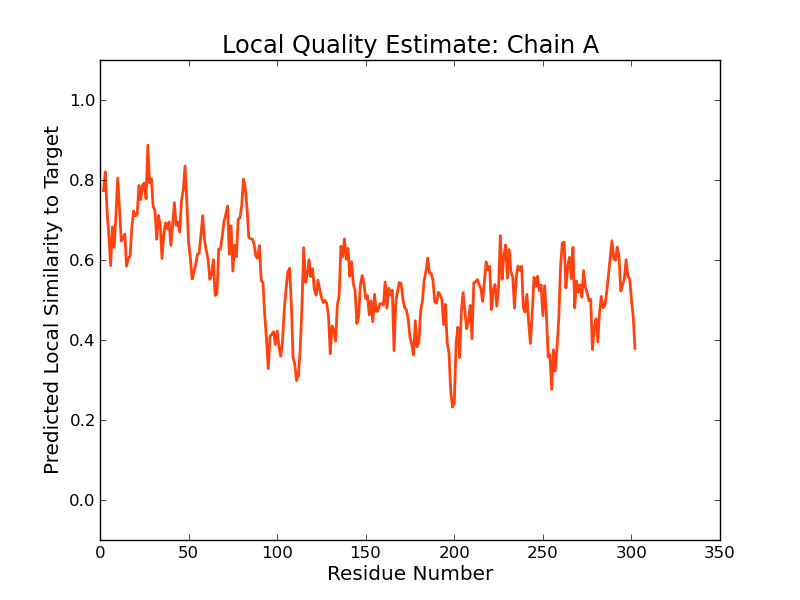

SWISS-MODEL Homology Modelling Report |
Model Building Report
This document lists the results for the homology modelling project "T451DRAFT_1371" submitted to SWISS-MODEL workspace on July 14, 2017, 9:44 p.m..The submitted primary amino acid sequence is given in Table T1.
If you use any results in your research, please cite the relevant publications:
Marco Biasini; Stefan Bienert; Andrew Waterhouse; Konstantin Arnold; Gabriel Studer; Tobias Schmidt; Florian Kiefer; Tiziano Gallo Cassarino; Martino Bertoni; Lorenza Bordoli; Torsten Schwede. (2014). SWISS-MODEL: modelling protein tertiary and quaternary structure using evolutionary information. Nucleic Acids Research (1 July 2014) 42 (W1): W252-W258; doi: 10.1093/nar/gku340.Arnold, K., Bordoli, L., Kopp, J. and Schwede, T. (2006) The SWISS-MODEL workspace: a web-based environment for protein structure homology modelling. Bioinformatics, 22, 195-201.
Benkert, P., Biasini, M. and Schwede, T. (2011) Toward the estimation of the absolute quality of individual protein structure models. Bioinformatics, 27, 343-350
Results
The SWISS-MODEL template library (SMTL version 2017-07-12, PDB release 2017-07-07) was searched with Blast (Altschul et al., 1997) and HHBlits (Remmert, et al., 2011) for evolutionary related structures matching the target sequence in Table T1. For details on the template search, see Materials and Methods. Overall 517 templates were found (Table T2).
Models
The following models were built (see Materials and Methods "Model Building"):
Model #01 | File | Built with | Oligo-State | Ligands | GMQE | QMEAN |
|---|---|---|---|---|---|---|
| PDB | ProMod3 Version 1.0.2. | MONOMER | None | 0.64 | -3.81 |
|
| Template | Seq Identity | Oligo-state | Found by | Method | Resolution | Seq Similarity | Range | Coverage | Description |
|---|---|---|---|---|---|---|---|---|---|
| 4p6v.1.F | 23.27 | hetero-oligomer | HHblits | X-ray | 3.50Å | 0.32 | 0.98 | Na(+)-translocating NADH-quinone reductase subunit F |
| Ligand | Added to Model | Description |
|---|---|---|
| CA | ✕ - Binding site not conserved. | CALCIUM ION |
| FAD | ✕ - Binding site not conserved. | FLAVIN-ADENINE DINUCLEOTIDE |
| FE | ✕ - Binding site not conserved. | FE (III) ION |
| FES | ✕ - Binding site not conserved. | FE2/S2 (INORGANIC) CLUSTER |
| FMN | ✕ - Binding site not conserved. | FLAVIN MONONUCLEOTIDE |
| FMN | ✕ - Binding site not conserved. | FLAVIN MONONUCLEOTIDE |
| RBF | ✕ - Binding site not conserved. | RIBOFLAVIN |
Target MVNIRYAK---DNFELGENQSVLDCLTDRGVPVPFSCR-SGVCQTCLMRATGGTPPE--SSQNGLKDTLKLQNYFLACIC
4p6v.1.F DITISINGDPEKAIVTQPGGKLLTALAGAGVFVSSACGGGGSCGQCRVKIKSGGGDILPTELDHISKGEAREGERLACQV
Target HPTADLEVAMPNDNDVQAVIPATVKSLKLLNSEIMHVELECH--AAIDYRAGQFINLFRDR-------------------
4p6v.1.F AVKADMDLELPEEIFGVKKWECTVISNDNKATFIKELKLAIPDGESVPFRAGGYIQIEAPAHHVKYADFDVPEKYRGDWD
Target -------------SLGRSYSLASVPHEDDHLHLHVRR---------LPQGRVSGWIHEELRPDETVEIRGPGGDCFYTPG
4p6v.1.F KFNLFRYESKVDEPIIRAYSMANYPEEFGIIMLNVRIATPPPNNPNVPPGQMSSYIW-SLKAGDKCTISGPFGEFFAKD-
Target NTEQGLVLIGTGSGLAPLYGIIRDALSQGH-TGPIHLFHGSRDLNGLYLTGELRDLVEQYSNFNYVPCLSGG--DAAHGF
4p6v.1.F -TDAEMVFIGGGAGMAPMRSHIFDQLKRLKSKRKMSYWYGARSKREMFYVEDFDGLAAENDNFVWHCALSDPQPEDNWTG
Target AAGRADDVAFQQ-IP---NLKNWRMFLCGHPDMVKAAKKKAFMAGASMKDIYADAFNVSQSS
4p6v.1.F YTGFIHNVLYENYLKDHEAPEDCEYYMCGPPMMNAAVINMLKNLGVEEENILLDDFG-----
Model #02 | File | Built with | Oligo-State | Ligands | GMQE | QMEAN |
|---|---|---|---|---|---|---|
| PDB | ProMod3 Version 1.0.2. | MONOMER | None | 0.44 | -7.54 |
|
| Template | Seq Identity | Oligo-state | Found by | Method | Resolution | Seq Similarity | Range | Coverage | Description |
|---|---|---|---|---|---|---|---|---|---|
| 1tvc.1.A | 22.32 | monomer | HHblits | NMR | NA | 0.32 | 92 - 325 | 0.71 | METHANE MONOOXYGENASE COMPONENT C |
| Ligand | Added to Model | Description |
|---|---|---|
| FDA | ✕ - Binding site not conserved. | DIHYDROFLAVINE-ADENINE DINUCLEOTIDE |
Target MVNIRYAKDNFELGENQSVLDCLTDRGVPVPFSCRSGVCQTCLMRATGGTPPESSQNGLKDTLKLQNYFLACICHPTADL
1tvc.1.A --------------------------------------------------------------------------------
Target EVAMPNDNDVQAVIPATVKSLKLLNSEIMHVELECH------AAIDYRAGQFINLFRDRS-LGRSYSLASVPHEDDHLHL
1tvc.1.A -----------GSFEAEVVGLNWVSSNTVQFLLQKRPDECGNRGVKFEPGQFMDLTIPGTDVSRSYSPANLPNPEGRLEF
Target HVRRLPQGRVSGWIHEELRPDETVEIRGPGGDCFYTPGNTEQGLVLIGTGSGLAPLYGIIRDALSQGHTGPIHLFHGSRD
1tvc.1.A LIRVLPEGRFSDYLRNDARVGQVLSVKGPLGVFGLKER-GMAPRYFVAGGTGLAPVVSMVRQMQEWTAPNETRIYFGVNT
Target LNGLYLTGELRDLVEQYSNFNYVPCLSGGDAAHGFAAGRADDVAFQQIPN-LKNWRMFLCGHPDMVKAAKKKAFMAGASM
1tvc.1.A EPELFYIDELKSLERSMRNLTVKACVWHPSGDWEGEQGSPIDALREDLESSDANPDIYLCGPPGMIDAACELVRSRGIPG
Target KDIYADAFNVSQSS
1tvc.1.A EQVFFEKFLPSGA-
Model #03 | File | Built with | Oligo-State | Ligands | GMQE | QMEAN |
|---|---|---|---|---|---|---|
| PDB | ProMod3 Version 1.0.2. | MONOMER | None | 0.42 | -8.10 |
|  |
| Template | Seq Identity | Oligo-state | Found by | Method | Resolution | Seq Similarity | Range | Coverage | Description |
|---|---|---|---|---|---|---|---|---|---|
| 4n58.2.A | 17.89 | monomer | HHblits | X-ray | 1.86Å | 0.29 | 2 - 302 | 0.75 | Pectocin M2 |
| Ligand | Added to Model | Description |
|---|---|---|
| FES | ✕ - Binding site not conserved. | FE2/S2 (INORGANIC) CLUSTER |
| GOL | ✕ - Not biologically relevant. | GLYCEROL |
| GOL | ✕ - Not biologically relevant. | GLYCEROL |
| GOL | ✕ - Not biologically relevant. | GLYCEROL |
| GOL | ✕ - Not biologically relevant. | GLYCEROL |
| GOL | ✕ - Not biologically relevant. | GLYCEROL |
| GOL | ✕ - Not biologically relevant. | GLYCEROL |
| GOL | ✕ - Not biologically relevant. | GLYCEROL |
| GOL | ✕ - Not biologically relevant. | GLYCEROL |
| GOL | ✕ - Not biologically relevant. | GLYCEROL |
| GOL | ✕ - Not biologically relevant. | GLYCEROL |
| GOL | ✕ - Not biologically relevant. | GLYCEROL |
| GOL | ✕ - Not biologically relevant. | GLYCEROL |
| GOL | ✕ - Not biologically relevant. | GLYCEROL |
| GOL | ✕ - Not biologically relevant. | GLYCEROL |
| GOL | ✕ - Not biologically relevant. | GLYCEROL |
| GOL | ✕ - Not biologically relevant. | GLYCEROL |
| GOL | ✕ - Not biologically relevant. | GLYCEROL |
| GOL | ✕ - Not biologically relevant. | GLYCEROL |
| GOL | ✕ - Not biologically relevant. | GLYCEROL |
| GOL | ✕ - Not biologically relevant. | GLYCEROL |
| MPD | ✕ - Not biologically relevant. | (4S)-2-METHYL-2,4-PENTANEDIOL |
| MPD | ✕ - Not biologically relevant. | (4S)-2-METHYL-2,4-PENTANEDIOL |
| MPD | ✕ - Not biologically relevant. | (4S)-2-METHYL-2,4-PENTANEDIOL |
| MPD | ✕ - Not biologically relevant. | (4S)-2-METHYL-2,4-PENTANEDIOL |
| SO4 | ✕ - Not biologically relevant. | SULFATE ION |
| SO4 | ✕ - Not biologically relevant. | SULFATE ION |
| SO4 | ✕ - Not biologically relevant. | SULFATE ION |
| SO4 | ✕ - Not biologically relevant. | SULFATE ION |
| SO4 | ✕ - Not biologically relevant. | SULFATE ION |
| SO4 | ✕ - Not biologically relevant. | SULFATE ION |
| SO4 | ✕ - Not biologically relevant. | SULFATE ION |
| SO4 | ✕ - Not biologically relevant. | SULFATE ION |
| SO4 | ✕ - Not biologically relevant. | SULFATE ION |
| SO4 | ✕ - Not biologically relevant. | SULFATE ION |
Target MVNIRYAKDNFELGENQSVLDCLTDRGVPVPFSCRSGVCQTCLMRATGGTPPESSQNGLKDTLKLQNYFLACICHPTADL
4n58.2.A -VKDVTTGAEIEVPDDKYILDEFEKQGVNLPYSCRAGACSSCVALISSGEVDQSDGSFLSEKQEK-KYILTCCSYPKSDC
Target EVAMPNDNDVQ-----AVIPAT------VKSLKLLNSEIMHVELECHAAIDYRAGQFINLFRDRSLGRSYSLASVPHEDD
4n58.2.A TIETGYEDKILEDFEIELAETGLEFFNDLKDSLPRSGEILSGVTAPFEAFD-----HY-L-FGNGVERSININD-----V
Target HLHLHVRRLPQGRVSGWIHEELRPDETVEIRGPGGDCFYTPGNTEQGLVL--IGTGSGLAPLYGIIRDALSQGHTGPIHL
4n58.2.A GFNINVSQIPP-IMS--LLNGKN----------VGRFDIGSD-FVRNTALDGYSVAAYLGNITMRTEGVLNVKSDGTWQY
Target FHGSRDLNGLYL------TGELRDLVEQYSNFNYVPCLSGGDAAHGFAAGRADDVAFQQIPNLKNWRMFLCGHPDMVKAA
4n58.2.A EGVIRSYNDTYDANPSTHRGALGEWATGVL--------N-----------NL---------SGTPYEIRIPGELKIKENG
Target KKKAFMAGASMKDIYADAFNVSQSS
4n58.2.A K------------------------
Model #04 | File | Built with | Oligo-State | Ligands | GMQE | QMEAN |
|---|---|---|---|---|---|---|
| PDB | ProMod3 Version 1.0.2. | MONOMER | None | 0.41 | -8.53 |
|
| Template | Seq Identity | Oligo-state | Found by | Method | Resolution | Seq Similarity | Range | Coverage | Description |
|---|---|---|---|---|---|---|---|---|---|
| 4n59.1.A | 17.89 | monomer | HHblits | X-ray | 2.30Å | 0.29 | 2 - 302 | 0.75 | Pectocin M2 |
| Ligand | Added to Model | Description |
|---|---|---|
| CL | ✕ - Not biologically relevant. | CHLORIDE ION |
| FES | ✕ - Binding site not conserved. | FE2/S2 (INORGANIC) CLUSTER |
| SO4 | ✕ - Not biologically relevant. | SULFATE ION |
| SO4 | ✕ - Not biologically relevant. | SULFATE ION |
Target MVNIRYAKDNFELGENQSVLDCLTDRGVPVPFSCRSGVCQTCLMRATGGTPPESSQNGLKDTLKLQNYFLACICHPTADL
4n59.1.A -VKDVTTGAEIEVPDDKYILDEFEKQGVNLPYSCRAGACSSCVALISSGEVDQSDGSFLSEKQEK-KYILTCCSYPKSDC
Target EVAMPNDNDVQ-----AVIPAT------VKSLKLLNSEIMHVELECHAAIDYRAGQFINLFRDRSLGRSYSLASVPHEDD
4n59.1.A TIETGYEDKILEDFEIELAETGLEFFNDLKDSLPRSGEILSGVTAPFEAFD-----HY-L-FGNGVERSININD-----V
Target HLHLHVRRLPQGRVSGWIHEELRPDETVEIRGPGGDCFYTPGNTEQGLVL--IGTGSGLAPLYGIIRDALSQGHTGPIHL
4n59.1.A GFNINVSQIPP-IMS--LLNGKN----------VGRFDIGSD-FVRNTALDGYSVAAYLGNITMRTEGVLNVKSDGTWQY
Target FHGSRDLNGLYL------TGELRDLVEQYSNFNYVPCLSGGDAAHGFAAGRADDVAFQQIPNLKNWRMFLCGHPDMVKAA
4n59.1.A EGVIRSYNDTYDANPSTHRGALGEWATGVL--------N-----------NL---------SGTPYEIRIPGELKIKENG
Target KKKAFMAGASMKDIYADAFNVSQSS
4n59.1.A K------------------------
Materials and Methods
Template Search
Template search with Blast and HHBlits has been performed against the SWISS-MODEL template library (SMTL, last update: 2017-07-12, last included PDB release: 2017-07-07).
The target sequence was searched with BLAST (Altschul et al., 1997) against the primary amino acid sequence contained in the SMTL. A total of 85 templates were found.
An initial HHblits profile has been built using the procedure outlined in (Remmert, et al., 2011), followed by 1 iteration of HHblits against NR20. The obtained profile has then be searched against all profiles of the SMTL. A total of 433 templates were found.
Template Selection
For each identified template, the template's quality has been predicted from features of the target-template alignment. The templates with the highest quality have then been selected for model building.
Model Building
Models are built based on the target-template alignment using ProMod3. Coordinates which are conserved between the target and the template are copied from the template to the model. Insertions and deletions are remodelled using a fragment library. Side chains are then rebuilt. Finally, the geometry of the resulting model is regularized by using a force field. In case loop modelling with ProMod3 fails, an alternative model is built with PROMOD-II (Guex, et al., 1997).
Model Quality Estimation
The global and per-residue model quality has been assessed using the QMEAN scoring function (Benkert, et al., 2011) . For improved performance, weights of the individual QMEAN terms have been trained specifically for SWISS-MODEL.
Ligand Modelling
Ligands present in the template structure are transferred by homology to the model when the following criteria are met (Gallo -Casserino, to be published): (a) The ligands are annotated as biologically relevant in the template library, (b) the ligand is in contact with the model, (c) the ligand is not clashing with the protein, (d) the residues in contact with the ligand are conserved between the target and the template. If any of these four criteria is not satisfied, a certain ligand will not be included in the model. The model summary includes information on why and which ligand has not been included.
Oligomeric State Conservation
Homo-oligomeric structure of the target protein is predicted based on the analysis of pairwise interfaces of the identified template structures. For each relevant interface between polypeptide chains (interfaces with more than 10 residue-residue interactions), the QscoreOligomer (Mariani et al., 2011) is predicted from features such as similarity to target and frequency of observing this interface in the identified templates (Kiefer, Bertoni, Biasini, to be published). The prediction is performed with a random forest regressor using these features as input parameters to predict the probability of conservation for each interface. The QscoreOligomer of the whole complex is then calculated as the weight-averaged QscoreOligomer of the interfaces. The oligomeric state of the target is predicted to be the same as in the template when QscoreOligomer is predicted to be higher or equal to 0.5.
References
Altschul, S.F., Madden, T.L., Schaffer, A.A., Zhang, J., Zhang, Z., Miller, W. and Lipman, D.J. (1997) Gapped BLAST and PSI-BLAST: a new generation of protein database search programs. Nucleic Acids Res, 25, 3389-3402.
Remmert, M., Biegert, A., Hauser, A. and Soding, J. (2012) HHblits: lightning-fast iterative protein sequence searching by HMM-HMM alignment. Nat Methods, 9, 173-175.
Guex, N. and Peitsch, M.C. (1997) SWISS-MODEL and the Swiss-PdbViewer: an environment for comparative protein modeling. Electrophoresis, 18, 2714-2723.
Sali, A. and Blundell, T.L. (1993) Comparative protein modelling by satisfaction of spatial restraints. J Mol Biol, 234, 779-815.
Benkert, P., Biasini, M. and Schwede, T. (2011) Toward the estimation of the absolute quality of individual protein structure models. Bioinformatics, 27, 343-350.
Mariani, V., Kiefer, F., Schmidt, T., Haas, J. and Schwede, T. (2011) Assessment of template based protein structure predictions in CASP9. Proteins, 79 Suppl 10, 37-58.
Table T1:
Primary amino acid sequence for which templates were searched and models were built.
LKLLNSEIMHVELECHAAIDYRAGQFINLFRDRSLGRSYSLASVPHEDDHLHLHVRRLPQGRVSGWIHEELRPDETVEIRGPGGDCFYTPGNTEQGLVLI
GTGSGLAPLYGIIRDALSQGHTGPIHLFHGSRDLNGLYLTGELRDLVEQYSNFNYVPCLSGGDAAHGFAAGRADDVAFQQIPNLKNWRMFLCGHPDMVKA
AKKKAFMAGASMKDIYADAFNVSQSS
Table T2:
| Template | Seq Identity | Oligo-state | Found by | Method | Resolution | Seq Similarity | Coverage | Description |
|---|---|---|---|---|---|---|---|---|
| 4p6v.1.F | 23.27 | hetero-oligomer | HHblits | X-ray | 3.50Å | 0.32 | 0.98 | Na(+)-translocating NADH-quinone reductase subunit F |
| 4wqm.1.A | 24.92 | monomer | HHblits | X-ray | 1.62Å | 0.32 | 0.96 | Toluene-4-monooxygenase electron transfer component |
| 1krh.1.A | 21.22 | monomer | HHblits | X-ray | 1.50Å | 0.32 | 0.95 | Benzoate 1,2-Dioxygenase Reductase |
| 4wqm.1.A | 28.78 | monomer | BLAST | X-ray | 1.62Å | 0.34 | 0.85 | Toluene-4-monooxygenase electron transfer component |
| 1krh.1.A | 23.94 | monomer | BLAST | X-ray | 1.50Å | 0.34 | 0.79 | Benzoate 1,2-Dioxygenase Reductase |
| 3vo2.1.A | 20.97 | monomer | HHblits | X-ray | 1.39Å | 0.29 | 0.76 | Putative uncharacterized protein |
| 4n58.1.A | 17.89 | monomer | HHblits | X-ray | 1.86Å | 0.29 | 0.75 | Pectocin M2 |
| 4n58.2.A | 17.89 | monomer | HHblits | X-ray | 1.86Å | 0.29 | 0.75 | Pectocin M2 |
| 4n59.1.A | 17.89 | monomer | HHblits | X-ray | 2.30Å | 0.29 | 0.75 | Pectocin M2 |
| 4n59.2.A | 17.89 | monomer | HHblits | X-ray | 2.30Å | 0.29 | 0.75 | Pectocin M2 |
| 3vo1.1.A | 21.58 | monomer | HHblits | X-ray | 2.00Å | 0.30 | 0.74 | Ferredoxin |
| 3vo1.2.A | 21.58 | monomer | HHblits | X-ray | 2.00Å | 0.30 | 0.74 | Ferredoxin |
| 1tvc.1.A | 22.32 | monomer | HHblits | NMR | NA | 0.32 | 0.71 | METHANE MONOOXYGENASE COMPONENT C |
| 1gvh.1.A | 21.21 | homo-12-mer | HHblits | X-ray | 2.19Å | 0.32 | 0.71 | FLAVOHEMOPROTEIN |
| 4uaj.1.A | 25.11 | monomer | HHblits | X-ray | 2.70Å | 0.33 | 0.70 | Na(+)-translocating NADH-quinone reductase subunit F |
| 4u9u.1.A | 25.11 | monomer | HHblits | X-ray | 1.55Å | 0.33 | 0.70 | Na(+)-translocating NADH-quinone reductase subunit F |
| 1qfj.1.A | 22.27 | monomer | HHblits | X-ray | 2.20Å | 0.32 | 0.70 | PROTEIN (FLAVIN REDUCTASE) |
| 1qfj.2.A | 22.27 | monomer | HHblits | X-ray | 2.20Å | 0.32 | 0.70 | PROTEIN (FLAVIN REDUCTASE) |
| 1qfj.3.A | 22.27 | monomer | HHblits | X-ray | 2.20Å | 0.32 | 0.70 | PROTEIN (FLAVIN REDUCTASE) |
| 1qfj.4.A | 22.27 | monomer | HHblits | X-ray | 2.20Å | 0.32 | 0.70 | PROTEIN (FLAVIN REDUCTASE) |
| 2r6h.1.A | 22.47 | monomer | HHblits | X-ray | 2.95Å | 0.32 | 0.70 | NADH:ubiquinone oxidoreductase, Na translocating, F subunit |
| 2bsa.1.A | 22.81 | monomer | HHblits | X-ray | 1.92Å | 0.31 | 0.70 | FERREDOXIN-NADP REDUCTASE |
| 1w34.1.A | 22.81 | monomer | HHblits | X-ray | 1.73Å | 0.31 | 0.70 | FERREDOXIN-NADP REDUCTASE |
| 1e64.1.A | 22.91 | monomer | HHblits | X-ray | 2.30Å | 0.31 | 0.70 | FERREDOXIN-NADP+ REDUCTASE |
| 1qgz.1.A | 23.01 | monomer | HHblits | X-ray | 2.30Å | 0.32 | 0.69 | PROTEIN (FERREDOXIN:NADP+ REDUCTASE) |
| 1que.1.A | 23.01 | monomer | HHblits | X-ray | 1.80Å | 0.31 | 0.69 | FERREDOXIN--NADP+ REDUCTASE |
| 3crz.1.A | 22.22 | monomer | HHblits | X-ray | 1.90Å | 0.32 | 0.69 | Ferredoxin--NADP+ reductase |
| 3ozv.3.A | 19.65 | homo-dimer | HHblits | X-ray | 2.40Å | 0.30 | 0.70 | Flavohemoglobin |
| 3ozu.1.A | 19.65 | monomer | HHblits | X-ray | 2.00Å | 0.30 | 0.70 | Flavohemoprotein |
| 3ozv.3.B | 19.65 | homo-dimer | HHblits | X-ray | 2.40Å | 0.30 | 0.70 | Flavohemoglobin |
| 1cqx.1.A | 19.65 | monomer | HHblits | X-ray | 1.75Å | 0.30 | 0.70 | FLAVOHEMOPROTEIN |
| 1ewy.1.A | 23.01 | hetero-oligomer | HHblits | X-ray | 2.38Å | 0.31 | 0.69 | FERREDOXIN-NADP REDUCTASE |
| 1ewy.2.A | 23.01 | monomer | HHblits | X-ray | 2.38Å | 0.31 | 0.69 | FERREDOXIN-NADP REDUCTASE |
| 5h5j.1.A | 22.37 | hetero-oligomer | HHblits | X-ray | 2.50Å | 0.31 | 0.70 | Ferredoxin--NADP reductase |
| 5h59.1.A | 22.37 | monomer | HHblits | X-ray | 1.65Å | 0.31 | 0.70 | Ferredoxin--NADP reductase |
| 1jb9.1.A | 22.47 | monomer | HHblits | X-ray | 1.70Å | 0.31 | 0.70 | ferredoxin-NADP reductase |
| 2bmw.1.A | 21.59 | monomer | HHblits | X-ray | 1.50Å | 0.31 | 0.70 | FERREDOXIN--NADP REDUCTASE |
| 3lo8.1.A | 22.47 | monomer | HHblits | X-ray | 1.05Å | 0.31 | 0.70 | Ferredoxin--NADP reductase |
| 4c43.1.A | 22.57 | monomer | HHblits | X-ray | 1.70Å | 0.31 | 0.69 | FERREDOXIN--NADP REDUCTASE |
| 4eh1.1.A | 20.89 | homo-dimer | HHblits | X-ray | 2.20Å | 0.31 | 0.69 | Flavohemoprotein |
| 4eh1.1.B | 20.89 | homo-dimer | HHblits | X-ray | 2.20Å | 0.31 | 0.69 | Flavohemoprotein |
| 1h42.1.A | 21.15 | monomer | HHblits | X-ray | 2.15Å | 0.31 | 0.70 | FERREDOXIN--NADP+ REDUCTASE |
| 4b4d.1.A | 22.67 | homo-dimer | HHblits | X-ray | 1.50Å | 0.31 | 0.69 | FERREDOXIN-NADP REDUCTASE |
| 3w5h.1.A | 19.56 | monomer | HHblits | X-ray | 0.78Å | 0.31 | 0.69 | NADH-cytochrome b5 reductase 3 |
| 1ndh.1.A | 19.56 | monomer | HHblits | X-ray | 2.10Å | 0.31 | 0.69 | CYTOCHROME B5 REDUCTASE |
| 3w2e.1.A | 19.56 | monomer | HHblits | X-ray | 2.10Å | 0.31 | 0.69 | NADH-cytochrome b5 reductase 3 |
| 1a8p.1.A | 21.33 | monomer | HHblits | X-ray | 2.00Å | 0.31 | 0.69 | NADPH\:FERREDOXIN OXIDOREDUCTASE |
| 5tr9.1.A | 20.80 | monomer | HHblits | X-ray | 1.65Å | 0.31 | 0.69 | Ferredoxin-NADP reductase |
| 5ufa.2.A | 20.80 | monomer | HHblits | X-ray | 2.50Å | 0.31 | 0.69 | Oxidoreductase |
| 1umk.1.A | 19.11 | monomer | HHblits | X-ray | 1.75Å | 0.31 | 0.69 | NADH-cytochrome b5 reductase |
| 2eix.1.A | 20.09 | homo-dimer | HHblits | X-ray | 1.56Å | 0.31 | 0.69 | NADH-cytochrome b5 reductase |
| 1quf.1.A | 22.77 | monomer | HHblits | X-ray | 2.25Å | 0.31 | 0.69 | FERREDOXIN-NADP+ REDUCTASE |
| 1h85.1.A | 22.77 | monomer | HHblits | X-ray | 2.30Å | 0.31 | 0.69 | FERREDOXIN--NADP REDUCTASE |
| 4bpr.1.A | 22.32 | monomer | HHblits | X-ray | 2.00Å | 0.31 | 0.69 | FERREDOXIN-NADP REDUCTASE |
| 1bjk.1.A | 22.87 | monomer | HHblits | X-ray | 2.30Å | 0.31 | 0.68 | FERREDOXIN--NADP+ REDUCTASE |
| 1ib0.1.A | 19.11 | monomer | HHblits | X-ray | 2.30Å | 0.31 | 0.69 | NADH-CYTOCHROME B5 REDUCTASE |
| 1gjr.1.A | 22.87 | monomer | HHblits | X-ray | 2.10Å | 0.31 | 0.68 | FERREDOXIN-NADP REDUCTASE |
| 2rc6.1.A | 23.98 | monomer | HHblits | X-ray | 2.70Å | 0.32 | 0.68 | Ferredoxin-NADP reductase |
| 2rc5.2.A | 23.98 | monomer | HHblits | X-ray | 2.43Å | 0.32 | 0.68 | Ferredoxin-NADP reductase |
| 1qx4.1.A | 18.67 | homo-dimer | HHblits | X-ray | 1.80Å | 0.30 | 0.69 | NADH-cytochrome b5 reductase |
| 1qh0.1.A | 22.97 | monomer | HHblits | X-ray | 1.93Å | 0.31 | 0.68 | PROTEIN (FERREDOXIN:NADP+ REDUCTASE) |
| 1fdr.1.A | 19.11 | monomer | HHblits | X-ray | 1.70Å | 0.30 | 0.69 | FLAVODOXIN REDUCTASE |
| 1gr1.1.A | 22.97 | monomer | HHblits | X-ray | 2.50Å | 0.31 | 0.68 | FERREDOXIN--NADP+ REDUCTASE |
| 3fpk.1.A | 18.22 | homo-dimer | HHblits | X-ray | 1.70Å | 0.30 | 0.69 | Ferredoxin-NADP reductase |
| 3zbt.1.A | 22.97 | monomer | HHblits | X-ray | 1.92Å | 0.31 | 0.68 | FERREDOXIN-NADP REDUCTASE |
| 1b2r.1.A | 22.97 | monomer | HHblits | X-ray | 1.80Å | 0.31 | 0.68 | PROTEIN (FERREDOXIN-NADP+ REDUCTASE) |
| 1e62.1.A | 22.97 | monomer | HHblits | X-ray | 2.30Å | 0.31 | 0.68 | FERREDOXIN-NADP+ REDUCTASE |
| 2ok7.1.A | 17.33 | homo-dimer | HHblits | X-ray | 2.70Å | 0.30 | 0.69 | Putative ferredoxin--NADP reductase |
| 2ok7.1.B | 17.33 | homo-dimer | HHblits | X-ray | 2.70Å | 0.30 | 0.69 | Putative ferredoxin--NADP reductase |
| 2ok8.2.B | 17.33 | homo-dimer | HHblits | X-ray | 2.40Å | 0.30 | 0.69 | Putative ferredoxin--NADP reductase |
| 2ok8.2.A | 17.33 | homo-dimer | HHblits | X-ray | 2.40Å | 0.30 | 0.69 | Putative ferredoxin--NADP reductase |
| 1qgy.1.A | 22.97 | monomer | HHblits | X-ray | 1.70Å | 0.31 | 0.68 | Ferredoxin--NADP+ reductase |
| 2xnj.1.A | 19.11 | monomer | HHblits | X-ray | 1.90Å | 0.30 | 0.69 | FERREDOXIN NADP-H REDUCTASE |
| 1w87.1.A | 22.97 | monomer | HHblits | X-ray | 3.00Å | 0.31 | 0.68 | FERREDOXIN-NADP REDUCTASE |
| 1w35.1.A | 22.97 | monomer | HHblits | X-ray | 1.90Å | 0.31 | 0.68 | FERREDOXIN-NADP+ REDUCTASE |
| 2x3u.1.A | 22.97 | monomer | HHblits | X-ray | 1.93Å | 0.31 | 0.68 | FERREDOXIN-NADP REDUCTASE |
| 1cne.1.A | 18.22 | monomer | HHblits | X-ray | 3.00Å | 0.30 | 0.69 | NITRATE REDUCTASE |
| 1bx1.1.A | 21.88 | monomer | HHblits | X-ray | 1.90Å | 0.30 | 0.69 | PROTEIN (FERREDOXIN:NADP+ OXIDOREDUCTASE) |
| 1go2.1.A | 23.08 | monomer | HHblits | X-ray | 1.70Å | 0.31 | 0.68 | FERREDOXIN--NADP+ REDUCTASE |
| 1e63.1.A | 23.08 | monomer | HHblits | X-ray | 2.30Å | 0.31 | 0.68 | FERREDOXIN-NADP+ REDUCTASE |
| 1ogj.1.A | 23.08 | monomer | HHblits | X-ray | 1.64Å | 0.31 | 0.68 | FERREDOXIN--NADP+ REDUCTASE |
| 4f7d.1.A | 22.77 | monomer | HHblits | X-ray | 2.35Å | 0.30 | 0.69 | Ferredoxin--NADP reductase |
| 4fk8.1.A | 22.77 | monomer | HHblits | X-ray | 2.10Å | 0.30 | 0.69 | Ferredoxin--NADP reductase |
| 3zc3.1.A | 22.62 | monomer | HHblits | X-ray | 2.30Å | 0.31 | 0.68 | FERREDOXIN-NADP REDUCTASE |
| 3zbu.1.A | 22.62 | monomer | HHblits | X-ray | 1.89Å | 0.31 | 0.68 | FERREDOXIN-NADP REDUCTASE |
| 3jqq.1.A | 16.89 | homo-dimer | HHblits | X-ray | 2.20Å | 0.30 | 0.69 | Ferredoxin NADP reductase |
| 3jqq.2.B | 16.89 | homo-dimer | HHblits | X-ray | 2.20Å | 0.30 | 0.69 | Ferredoxin NADP reductase |
| 3jqq.3.B | 16.89 | homo-dimer | HHblits | X-ray | 2.20Å | 0.30 | 0.69 | Ferredoxin NADP reductase |
| 3jqr.1.A | 16.89 | homo-dimer | HHblits | X-ray | 2.30Å | 0.30 | 0.69 | Ferredoxin NADP reductase |
| 3jqp.5.A | 16.89 | homo-dimer | HHblits | X-ray | 3.00Å | 0.30 | 0.69 | Ferredoxin NADP reductase |
| 3jqp.5.B | 16.89 | homo-dimer | HHblits | X-ray | 3.00Å | 0.30 | 0.69 | Ferredoxin NADP reductase |
| 3jqp.1.A | 16.89 | homo-dimer | HHblits | X-ray | 3.00Å | 0.30 | 0.69 | Ferredoxin NADP reductase |
| 3jqp.4.B | 16.89 | homo-dimer | HHblits | X-ray | 3.00Å | 0.30 | 0.69 | Ferredoxin NADP reductase |
| 3jqp.6.B | 16.89 | homo-dimer | HHblits | X-ray | 3.00Å | 0.30 | 0.69 | Ferredoxin NADP reductase |
| 3jqp.3.A | 16.89 | homo-dimer | HHblits | X-ray | 3.00Å | 0.30 | 0.69 | Ferredoxin NADP reductase |
| 2vyq.1.A | 22.07 | monomer | HHblits | X-ray | 1.90Å | 0.31 | 0.68 | FERREDOXIN-NADP REDUCTASE |
| 2vzl.1.A | 22.07 | monomer | HHblits | X-ray | 1.93Å | 0.31 | 0.68 | FERREDOXIN-NADP REDUCTASE |
| 1ogi.1.A | 22.07 | monomer | HHblits | X-ray | 1.64Å | 0.31 | 0.68 | FERREDOXIN--NADP+ REDUCTASE |
| 1bqe.1.A | 22.62 | monomer | HHblits | X-ray | 2.45Å | 0.31 | 0.68 | FERREDOXIN--NADP REDUCTASE |
| 5thx.1.A | 23.87 | monomer | HHblits | X-ray | 1.55Å | 0.31 | 0.68 | Ferredoxin--NADP reductase |
| 1fnd.1.A | 22.07 | monomer | HHblits | X-ray | 1.70Å | 0.31 | 0.68 | FERREDOXIN-NADP+ REDUCTASE |
| 1qfz.1.A | 22.52 | monomer | HHblits | X-ray | 1.70Å | 0.31 | 0.68 | PROTEIN (FERREDOXIN:NADP+ REDUCTASE) |
| 1frq.1.A | 22.07 | monomer | HHblits | X-ray | 1.95Å | 0.31 | 0.68 | PROTEIN (FERREDOXIN:NADP+ OXIDOREDUCTASE) |
| 1cnf.1.A | 19.37 | monomer | HHblits | X-ray | 2.70Å | 0.31 | 0.68 | NITRATE REDUCTASE |
| 1bx0.1.A | 22.07 | monomer | HHblits | X-ray | 1.90Å | 0.31 | 0.68 | PROTEIN (FERREDOXIN:NADP+ OXIDOREDUCTASE) |
| 4g1v.1.A | 18.92 | monomer | HHblits | X-ray | 2.10Å | 0.31 | 0.68 | Flavohemoglobin |
| 4g1b.3.A | 18.92 | monomer | HHblits | X-ray | 3.00Å | 0.31 | 0.68 | Flavohemoglobin |
| 4g1b.1.A | 18.92 | monomer | HHblits | X-ray | 3.00Å | 0.31 | 0.68 | Flavohemoglobin |
| 5o0x.1.A | 20.36 | monomer | HHblits | X-ray | 2.20Å | 0.31 | 0.68 | Putative ferric reductase |
| 1frn.1.A | 21.62 | monomer | HHblits | X-ray | 2.00Å | 0.30 | 0.68 | FERREDOXIN-NADP+ REDUCTASE |
| 1sm4.1.A | 22.52 | monomer | HHblits | X-ray | 2.50Å | 0.30 | 0.68 | chloroplast ferredoxin-NADP+ oxidoreductase |
| 3w5u.1.A | 21.62 | hetero-oligomer | HHblits | X-ray | 2.70Å | 0.30 | 0.68 | Ferredoxin |
| 1qga.1.A | 22.62 | monomer | HHblits | X-ray | 2.00Å | 0.31 | 0.68 | PROTEIN (FERREDOXIN:NADP+ REDUCTASE) |
| 3mhp.1.A | 22.62 | hetero-oligomer | HHblits | X-ray | 1.70Å | 0.31 | 0.68 | Ferredoxin--NADP reductase, leaf isozyme, chloroplastic |
| 3mhp.1.B | 22.62 | hetero-oligomer | HHblits | X-ray | 1.70Å | 0.31 | 0.68 | Ferredoxin--NADP reductase, leaf isozyme, chloroplastic |
| 4af7.1.A | 22.07 | monomer | HHblits | X-ray | 2.85Å | 0.30 | 0.68 | FERREDOXIN--NADP REDUCTASE, LEAF ISOZYME, CHLOROPLASTIC |
| 2xnc.1.A | 22.73 | monomer | HHblits | X-ray | 2.90Å | 0.31 | 0.67 | FERREDOXIN--NADP REDUCTASE, LEAF ISOZYME, CHLOROPLASTIC |
| 1qg0.1.A | 22.73 | monomer | HHblits | X-ray | 2.50Å | 0.31 | 0.67 | PROTEIN (FERREDOXIN:NADP+ REDUCTASE) |
| 2vnk.1.A | 19.82 | monomer | HHblits | X-ray | 1.93Å | 0.30 | 0.68 | NADPH\:FERREDOXIN REDUCTASE |
| 2vni.1.A | 19.82 | monomer | HHblits | X-ray | 2.24Å | 0.30 | 0.68 | NADPH\:FERREDOXIN REDUCTASE |
| 2vnh.1.A | 19.82 | monomer | HHblits | X-ray | 2.27Å | 0.30 | 0.68 | NADPH\:FERREDOXIN REDUCTASE |
| 4k1x.1.A | 19.82 | monomer | HHblits | X-ray | 1.70Å | 0.30 | 0.68 | NADPH:ferredoxin reductase |
| 4k1x.2.A | 19.82 | monomer | HHblits | X-ray | 1.70Å | 0.30 | 0.68 | NADPH:ferredoxin reductase |
| 4af6.1.A | 22.73 | monomer | HHblits | X-ray | 2.90Å | 0.31 | 0.67 | FERREDOXIN--NADP REDUCTASE, LEAF ISOZYME, CHLOROPLASTIC |
| 1gaq.1.A | 21.82 | hetero-oligomer | HHblits | X-ray | 2.59Å | 0.31 | 0.67 | FERREDOXIN-NADP+ REDUCTASE |
| 1gaq.2.A | 21.82 | monomer | HHblits | X-ray | 2.59Å | 0.31 | 0.67 | FERREDOXIN-NADP+ REDUCTASE |
| 1gaw.1.A | 21.82 | monomer | HHblits | X-ray | 2.20Å | 0.31 | 0.67 | FERREDOXIN-NADP+ REDUCTASE |
| 1gaw.2.A | 21.82 | monomer | HHblits | X-ray | 2.20Å | 0.31 | 0.67 | FERREDOXIN-NADP+ REDUCTASE |
| 2b5o.1.A | 19.37 | monomer | HHblits | X-ray | 2.50Å | 0.30 | 0.68 | Ferredoxin--NADP reductase |
| 2pia.1.A | 17.89 | monomer | HHblits | X-ray | 2.00Å | 0.29 | 0.67 | PHTHALATE DIOXYGENASE REDUCTASE |
| 5ksw.1.B | 17.84 | hetero-oligomer | HHblits | X-ray | 2.47Å | 0.28 | 0.65 | Dihydroorotate dehydrogenase B (NAD(+)), electron transfer subunit |
| 1ep3.1.B | 19.43 | hetero-oligomer | HHblits | X-ray | 2.10Å | 0.28 | 0.65 | DIHYDROOROTATE DEHYDROGENASE B (PYRK SUBUNIT) |
| 1ep2.1.B | 19.43 | hetero-oligomer | HHblits | X-ray | 2.40Å | 0.28 | 0.65 | DIHYDROOROTATE DEHYDROGENASE B (PYRK SUBUNIT) |
| 4yhb.1.A | 12.90 | monomer | HHblits | X-ray | 1.89Å | 0.26 | 0.67 | Iron-chelator utilization protein |
| 4yhb.2.A | 12.90 | monomer | HHblits | X-ray | 1.89Å | 0.26 | 0.67 | Iron-chelator utilization protein |
| 1tvc.1.A | 28.80 | monomer | BLAST | NMR | NA | 0.35 | 0.59 | METHANE MONOOXYGENASE COMPONENT C |
| 3crz.1.A | 24.49 | monomer | BLAST | X-ray | 1.90Å | 0.33 | 0.60 | Ferredoxin--NADP+ reductase |
| 4ylf.1.A | 17.56 | hetero-oligomer | HHblits | X-ray | 2.30Å | 0.29 | 0.63 | Dihydroorotate dehydrogenase B (NAD(+)), electron transfer subunit homolog |
| 4ylf.2.A | 17.56 | hetero-oligomer | HHblits | X-ray | 2.30Å | 0.29 | 0.63 | Dihydroorotate dehydrogenase B (NAD(+)), electron transfer subunit homolog |
| 4yry.1.A | 17.56 | hetero-oligomer | HHblits | X-ray | 2.40Å | 0.29 | 0.63 | Dihydroorotate dehydrogenase B (NAD(+)), electron transfer subunit homolog |
| 4yry.2.A | 17.56 | hetero-oligomer | HHblits | X-ray | 2.40Å | 0.29 | 0.63 | Dihydroorotate dehydrogenase B (NAD(+)), electron transfer subunit homolog |
| 2gpj.1.A | 11.21 | monomer | HHblits | X-ray | 2.20Å | 0.25 | 0.66 | Siderophore-interacting protein |
| 1qfj.1.A | 22.45 | monomer | BLAST | X-ray | 2.20Å | 0.32 | 0.60 | PROTEIN (FLAVIN REDUCTASE) |
| 1qfj.2.A | 22.45 | monomer | BLAST | X-ray | 2.20Å | 0.32 | 0.60 | PROTEIN (FLAVIN REDUCTASE) |
| 1qfj.3.A | 22.45 | monomer | BLAST | X-ray | 2.20Å | 0.32 | 0.60 | PROTEIN (FLAVIN REDUCTASE) |
| 1qfj.4.A | 22.45 | monomer | BLAST | X-ray | 2.20Å | 0.32 | 0.60 | PROTEIN (FLAVIN REDUCTASE) |
| 5jca.1.B | 17.33 | hetero-oligomer | HHblits | X-ray | 1.50Å | 0.29 | 0.62 | NADH-dependent Ferredoxin:NADP Oxidoreductase (NfnI) subunit beta |
| 5thx.1.A | 31.03 | monomer | BLAST | X-ray | 1.55Å | 0.35 | 0.53 | Ferredoxin--NADP reductase |
| 1tll.1.A | 19.89 | homo-dimer | HHblits | X-ray | 2.30Å | 0.30 | 0.57 | Nitric-oxide synthase, brain |
| 1tll.1.B | 19.89 | homo-dimer | HHblits | X-ray | 2.30Å | 0.30 | 0.57 | Nitric-oxide synthase, brain |
| 4dql.1.A | 20.77 | monomer | HHblits | X-ray | 2.15Å | 0.31 | 0.56 | Bifunctional P-450/NADPH-P450 reductase |
| 4dql.2.A | 20.77 | monomer | HHblits | X-ray | 2.15Å | 0.31 | 0.56 | Bifunctional P-450/NADPH-P450 reductase |
| 4dqk.1.A | 20.77 | monomer | HHblits | X-ray | 2.40Å | 0.31 | 0.56 | Bifunctional P-450/NADPH-P450 reductase |
| 5gxu.1.A | 21.86 | monomer | HHblits | X-ray | 2.30Å | 0.31 | 0.56 | NADPH--cytochrome P450 reductase 2 |
| 4b4d.1.A | 27.68 | homo-dimer | BLAST | X-ray | 1.50Å | 0.33 | 0.54 | FERREDOXIN-NADP REDUCTASE |
| 1ddg.1.A | 19.35 | monomer | HHblits | X-ray | 2.01Å | 0.29 | 0.57 | SULFITE REDUCTASE (NADPH) FLAVOPROTEIN ALPHA-COMPONENT |
| 1ddg.2.A | 19.35 | monomer | HHblits | X-ray | 2.01Å | 0.29 | 0.57 | SULFITE REDUCTASE (NADPH) FLAVOPROTEIN ALPHA-COMPONENT |
| 1ddi.1.A | 19.35 | monomer | HHblits | X-ray | 2.51Å | 0.29 | 0.57 | SULFITE REDUCTASE [NADPH] FLAVOPROTEIN ALPHA-COMPONENT |
| 2bf4.1.A | 19.78 | monomer | HHblits | X-ray | 3.00Å | 0.30 | 0.56 | NADPH-CYTOCHROME P450 REDUCTASE |
| 2bn4.1.A | 19.78 | monomer | HHblits | X-ray | 2.91Å | 0.30 | 0.56 | NADPH CYTOCHROME P450 REDUCTASE |
| 2bpo.1.A | 19.78 | monomer | HHblits | X-ray | 2.90Å | 0.29 | 0.56 | NADPH-CYTOCHROM P450 REDUCTASE |
| 3qfs.1.A | 17.58 | monomer | HHblits | X-ray | 1.40Å | 0.29 | 0.56 | NADPH--cytochrome P450 reductase |
| 1amo.1.A | 18.23 | monomer | HHblits | X-ray | 2.60Å | 0.29 | 0.56 | NADPH-CYTOCHROME P450 REDUCTASE |
| 3es9.1.A | 18.23 | monomer | HHblits | X-ray | 3.40Å | 0.29 | 0.56 | NADPH--cytochrome P450 reductase |
| 3es9.2.A | 18.23 | monomer | HHblits | X-ray | 3.40Å | 0.29 | 0.56 | NADPH--cytochrome P450 reductase |
| 3es9.3.A | 18.23 | monomer | HHblits | X-ray | 3.40Å | 0.29 | 0.56 | NADPH--cytochrome P450 reductase |
| 4yaf.1.A | 18.23 | monomer | HHblits | X-ray | 1.91Å | 0.29 | 0.56 | NADPH--cytochrome P450 reductase |
| 4yaf.2.A | 18.23 | monomer | HHblits | X-ray | 1.91Å | 0.29 | 0.56 | NADPH--cytochrome P450 reductase |
| 3qfc.1.A | 17.58 | monomer | HHblits | X-ray | 1.80Å | 0.29 | 0.56 | NADPH--cytochrome P450 reductase |
| 3qfc.2.A | 17.58 | monomer | HHblits | X-ray | 1.80Å | 0.29 | 0.56 | NADPH--cytochrome P450 reductase |
| 5emn.1.A | 17.58 | monomer | HHblits | X-ray | 2.20Å | 0.29 | 0.56 | NADPH--cytochrome P450 reductase |
| 5emn.2.A | 17.58 | monomer | HHblits | X-ray | 2.20Å | 0.29 | 0.56 | NADPH--cytochrome P450 reductase |
| 3qe2.1.A | 17.58 | monomer | HHblits | X-ray | 1.75Å | 0.29 | 0.56 | NADPH--cytochrome P450 reductase |
| 3qe2.2.A | 17.58 | monomer | HHblits | X-ray | 1.75Å | 0.29 | 0.56 | NADPH--cytochrome P450 reductase |
| 1ja0.1.A | 18.33 | monomer | HHblits | X-ray | 2.60Å | 0.29 | 0.55 | NADPH-Cytochrome P450 Reductase |
| 3wkt.1.A | 18.33 | hetero-oligomer | HHblits | X-ray | 4.30Å | 0.29 | 0.55 | NADPH-cytochrome P450 reductase |
| 3wkt.2.A | 18.33 | hetero-oligomer | HHblits | X-ray | 4.30Å | 0.29 | 0.55 | NADPH-cytochrome P450 reductase |
| 4y9u.1.A | 18.33 | monomer | HHblits | X-ray | 1.95Å | 0.29 | 0.55 | NADPH--cytochrome P450 reductase |
| 4y9u.2.A | 18.33 | monomer | HHblits | X-ray | 1.95Å | 0.29 | 0.55 | NADPH--cytochrome P450 reductase |
| 4yao.2.A | 18.33 | monomer | HHblits | X-ray | 2.50Å | 0.29 | 0.55 | NADPH--cytochrome P450 reductase |
| 3fjo.1.A | 17.13 | monomer | HHblits | X-ray | 2.50Å | 0.29 | 0.56 | NADPH-cytochrome P450 reductase |
| 1j9z.1.A | 17.78 | monomer | HHblits | X-ray | 2.70Å | 0.29 | 0.55 | NADPH-Cytochrome P450 reductase |
| 1j9z.2.A | 17.78 | monomer | HHblits | X-ray | 2.70Å | 0.29 | 0.55 | NADPH-Cytochrome P450 reductase |
| 3ojx.1.A | 18.44 | monomer | HHblits | X-ray | 2.50Å | 0.30 | 0.55 | NADPH-Cytochrome P450 Reductase |
| 1ja1.1.A | 17.22 | monomer | HHblits | X-ray | 1.80Å | 0.29 | 0.55 | NADPH-Cytochrome P450 Reductase |
| 1ja1.2.A | 17.22 | monomer | HHblits | X-ray | 1.80Å | 0.29 | 0.55 | NADPH-Cytochrome P450 Reductase |
| 3qft.1.A | 16.67 | monomer | HHblits | X-ray | 1.40Å | 0.29 | 0.55 | NADPH--cytochrome P450 reductase |
| 4y9r.1.A | 18.54 | monomer | HHblits | X-ray | 2.40Å | 0.29 | 0.55 | NADPH--cytochrome P450 reductase |
| 4y9r.2.A | 18.54 | monomer | HHblits | X-ray | 2.40Å | 0.29 | 0.55 | NADPH--cytochrome P450 reductase |
| 4y7c.1.A | 18.54 | monomer | HHblits | X-ray | 2.20Å | 0.29 | 0.55 | NADPH--cytochrome P450 reductase |
| 4y7c.2.A | 18.54 | monomer | HHblits | X-ray | 2.20Å | 0.29 | 0.55 | NADPH--cytochrome P450 reductase |
| 2qtz.1.A | 19.32 | monomer | HHblits | X-ray | 1.90Å | 0.30 | 0.54 | Methionine synthase reductase |
| 5fa6.1.A | 17.92 | monomer | HHblits | X-ray | 2.30Å | 0.29 | 0.53 | NADPH--cytochrome P450 reductase |
| 5fa6.2.A | 17.92 | monomer | HHblits | X-ray | 2.30Å | 0.29 | 0.53 | NADPH--cytochrome P450 reductase |
| 3qfr.1.A | 17.34 | monomer | HHblits | X-ray | 2.40Å | 0.29 | 0.53 | NADPH--cytochrome P450 reductase |
| 3qfr.2.A | 17.34 | monomer | HHblits | X-ray | 2.40Å | 0.29 | 0.53 | NADPH--cytochrome P450 reductase |
| 1f20.1.A | 18.71 | monomer | HHblits | X-ray | 1.90Å | 0.29 | 0.52 | NITRIC-OXIDE SYNTHASE |
| 2eix.1.A | 26.42 | homo-dimer | BLAST | X-ray | 1.56Å | 0.35 | 0.49 | NADH-cytochrome b5 reductase |
| 3vo1.1.A | 30.99 | monomer | BLAST | X-ray | 2.00Å | 0.34 | 0.44 | Ferredoxin |
| 3vo1.2.A | 30.99 | monomer | BLAST | X-ray | 2.00Å | 0.34 | 0.44 | Ferredoxin |
| 3vo2.1.A | 30.28 | monomer | BLAST | X-ray | 1.39Å | 0.34 | 0.44 | Putative uncharacterized protein |
| 1gvh.1.A | 26.67 | homo-12-mer | BLAST | X-ray | 2.19Å | 0.36 | 0.41 | FLAVOHEMOPROTEIN |
| 1a8p.1.A | 26.62 | monomer | BLAST | X-ray | 2.00Å | 0.33 | 0.43 | NADPH\:FERREDOXIN OXIDOREDUCTASE |
| 3ozv.3.A | 28.57 | homo-dimer | BLAST | X-ray | 2.40Å | 0.36 | 0.41 | Flavohemoglobin |
| 3ozu.1.A | 28.57 | monomer | BLAST | X-ray | 2.00Å | 0.36 | 0.41 | Flavohemoprotein |
| 3ozv.3.B | 28.57 | homo-dimer | BLAST | X-ray | 2.40Å | 0.36 | 0.41 | Flavohemoglobin |
| 1cqx.1.A | 28.57 | monomer | BLAST | X-ray | 1.75Å | 0.36 | 0.41 | FLAVOHEMOPROTEIN |
| 3a1f.1.A | 19.58 | monomer | HHblits | X-ray | 2.00Å | 0.30 | 0.44 | Cytochrome b-245 heavy chain |
| 4u9u.1.A | 32.06 | monomer | BLAST | X-ray | 1.55Å | 0.36 | 0.40 | Na(+)-translocating NADH-quinone reductase subunit F |
| 4uaj.1.A | 32.06 | monomer | BLAST | X-ray | 2.70Å | 0.36 | 0.40 | Na(+)-translocating NADH-quinone reductase subunit F |
| 4p6v.1.F | 32.06 | hetero-oligomer | BLAST | X-ray | 3.50Å | 0.36 | 0.40 | Na(+)-translocating NADH-quinone reductase subunit F |
| 3lrx.1.A | 14.58 | homo-hexamer | HHblits | X-ray | 2.60Å | 0.27 | 0.44 | Putative hydrogenase |
| 2rc6.1.A | 29.84 | monomer | BLAST | X-ray | 2.70Å | 0.36 | 0.38 | Ferredoxin-NADP reductase |
| 2rc5.2.A | 29.84 | monomer | BLAST | X-ray | 2.43Å | 0.36 | 0.38 | Ferredoxin-NADP reductase |
| 2r6h.1.A | 31.40 | monomer | BLAST | X-ray | 2.95Å | 0.36 | 0.37 | NADH:ubiquinone oxidoreductase, Na translocating, F subunit |
| 3lyu.1.A | 16.15 | homo-hexamer | HHblits | X-ray | 2.30Å | 0.27 | 0.40 | Putative hydrogenase |
| 2xnc.1.A | 31.86 | monomer | BLAST | X-ray | 2.90Å | 0.36 | 0.35 | FERREDOXIN--NADP REDUCTASE, LEAF ISOZYME, CHLOROPLASTIC |
| 3zyy.1.A | 26.32 | homo-dimer | HHblits | X-ray | 2.20Å | 0.34 | 0.35 | IRON-SULFUR CLUSTER BINDING PROTEIN |
| 3zyy.1.B | 26.32 | homo-dimer | HHblits | X-ray | 2.20Å | 0.34 | 0.35 | IRON-SULFUR CLUSTER BINDING PROTEIN |
| 4eh1.1.A | 31.19 | homo-dimer | BLAST | X-ray | 2.20Å | 0.37 | 0.33 | Flavohemoprotein |
| 4eh1.1.B | 31.19 | homo-dimer | BLAST | X-ray | 2.20Å | 0.37 | 0.33 | Flavohemoprotein |
| 2rjo.1.A | 9.43 | monomer | HHblits | X-ray | 2.05Å | 0.25 | 0.33 | Twin-arginine translocation pathway signal protein |
| 4wut.1.A | 13.46 | monomer | HHblits | X-ray | 1.50Å | 0.26 | 0.32 | ABC transporter substrate binding protein (Ribose) |
| 4y9t.1.A | 11.43 | monomer | HHblits | X-ray | 1.80Å | 0.25 | 0.32 | ABC transporter, solute binding protein |
| 4itk.1.A | 28.09 | monomer | HHblits | X-ray | 1.18Å | 0.37 | 0.27 | Apoferredoxin |
| 1qob.1.A | 30.68 | monomer | HHblits | X-ray | 1.80Å | 0.38 | 0.27 | FERREDOXIN |
| 1qof.1.A | 30.68 | monomer | HHblits | X-ray | 1.80Å | 0.38 | 0.27 | FERREDOXIN |
| 1qog.1.A | 30.68 | monomer | HHblits | X-ray | 1.80Å | 0.38 | 0.27 | FERREDOXIN |
| 1j7b.1.A | 30.68 | monomer | HHblits | X-ray | 1.80Å | 0.38 | 0.27 | FERREDOXIN I |
| 1rfk.1.A | 29.55 | monomer | HHblits | X-ray | 1.25Å | 0.37 | 0.27 | Ferredoxin |
| 1doy.1.A | 29.55 | monomer | HHblits | NMR | NA | 0.37 | 0.27 | FERREDOXIN [2FE-2S] |
| 1dox.1.A | 29.55 | monomer | HHblits | NMR | NA | 0.37 | 0.27 | FERREDOXIN [2FE-2S] |
| 2kaj.1.A | 29.55 | monomer | HHblits | NMR | NA | 0.37 | 0.27 | Ferredoxin-1 |
| 5auk.1.A | 29.55 | monomer | HHblits | X-ray | 1.62Å | 0.37 | 0.27 | Ferredoxin-1 |
| 1off.1.A | 29.55 | monomer | HHblits | X-ray | 1.80Å | 0.37 | 0.27 | FERREDOXIN I |
| 2pvo.1.D | 29.55 | hetero-oligomer | HHblits | X-ray | 3.40Å | 0.37 | 0.27 | Ferredoxin-1 |
| 3ksm.1.A | 9.62 | homo-dimer | HHblits | X-ray | 1.90Å | 0.24 | 0.32 | ABC-type sugar transport system, periplasmic component |
| 3av8.2.A | 27.27 | monomer | HHblits | X-ray | 1.46Å | 0.37 | 0.27 | Ferredoxin-1 |
| 3av8.1.A | 27.27 | monomer | HHblits | X-ray | 1.46Å | 0.37 | 0.27 | Ferredoxin-1 |
| 1awd.1.A | 26.14 | homo-dimer | HHblits | X-ray | 1.40Å | 0.37 | 0.27 | FERREDOXIN |
| 1fxa.1.A | 29.89 | monomer | HHblits | X-ray | 2.50Å | 0.37 | 0.27 | [2FE-2S] FERREDOXIN |
| 1ewy.1.B | 29.89 | hetero-oligomer | HHblits | X-ray | 2.38Å | 0.37 | 0.27 | FERREDOXIN I |
| 1qt9.1.A | 29.89 | monomer | HHblits | X-ray | 1.30Å | 0.37 | 0.27 | FERREDOXIN I |
| 1j7c.1.A | 29.89 | monomer | HHblits | X-ray | 1.80Å | 0.37 | 0.27 | FERREDOXIN I |
| 3p63.1.A | 29.89 | monomer | HHblits | X-ray | 2.30Å | 0.37 | 0.27 | Ferredoxin |
| 1fxi.1.A | 26.14 | monomer | HHblits | X-ray | 2.20Å | 0.36 | 0.27 | FERREDOXIN I |
| 1fxi.2.A | 26.14 | monomer | HHblits | X-ray | 2.20Å | 0.36 | 0.27 | FERREDOXIN I |
| 1fxi.3.A | 26.14 | monomer | HHblits | X-ray | 2.20Å | 0.36 | 0.27 | FERREDOXIN I |
| 1fxi.4.A | 26.14 | monomer | HHblits | X-ray | 2.20Å | 0.36 | 0.27 | FERREDOXIN I |
| 2n0s.1.B | 26.14 | hetero-oligomer | HHblits | NMR | NA | 0.36 | 0.27 | Ferredoxin, chloroplastic |
| 2mh7.1.A | 26.14 | monomer | HHblits | NMR | NA | 0.36 | 0.27 | Ferredoxin, chloroplastic |
| 4kq9.1.A | 9.71 | monomer | HHblits | X-ray | 1.90Å | 0.24 | 0.32 | Ribose ABC transporter, substrate binding protein |
| 1iue.1.A | 26.14 | monomer | HHblits | X-ray | 1.70Å | 0.36 | 0.27 | FERREDOXIN |
| 4fxc.1.A | 28.74 | monomer | HHblits | X-ray | 2.50Å | 0.37 | 0.27 | FERREDOXIN |
| 1j7a.1.A | 28.74 | monomer | HHblits | X-ray | 1.80Å | 0.37 | 0.27 | FERREDOXIN I |
| 1frr.1.A | 27.27 | monomer | HHblits | X-ray | 1.80Å | 0.36 | 0.27 | FERREDOXIN I |
| 5h57.1.A | 27.27 | monomer | HHblits | X-ray | 2.50Å | 0.36 | 0.27 | Ferredoxin-3, chloroplastic |
| 5h5j.1.B | 27.27 | hetero-oligomer | HHblits | X-ray | 2.50Å | 0.36 | 0.27 | Ferredoxin-3, chloroplastic |
| 1qoa.1.A | 28.74 | monomer | HHblits | X-ray | 1.70Å | 0.37 | 0.27 | FERREDOXIN |
| 3b2f.1.A | 23.60 | monomer | HHblits | X-ray | 1.70Å | 0.35 | 0.27 | Ferredoxin-1, chloroplastic |
| 1gaq.1.B | 23.60 | hetero-oligomer | HHblits | X-ray | 2.59Å | 0.35 | 0.27 | FERREDOXIN I |
| 5h8y.2.C | 23.60 | hetero-oligomer | HHblits | X-ray | 2.20Å | 0.35 | 0.27 | Ferredoxin-1, chloroplastic |
| 3ab5.1.A | 25.00 | monomer | HHblits | X-ray | 1.18Å | 0.36 | 0.27 | Ferredoxin |
| 2x7x.1.A | 12.12 | homo-dimer | HHblits | X-ray | 2.64Å | 0.26 | 0.30 | SENSOR PROTEIN |
| 4yo7.1.A | 10.00 | monomer | HHblits | X-ray | 1.70Å | 0.25 | 0.31 | Sugar ABC transporter (Sugar-binding protein) |
| 1pfd.1.A | 27.59 | monomer | HHblits | NMR | NA | 0.36 | 0.27 | FERREDOXIN |
| 2cjn.1.A | 26.44 | monomer | HHblits | NMR | NA | 0.36 | 0.27 | FERREDOXIN |
| 1roe.1.A | 26.44 | monomer | HHblits | NMR | NA | 0.36 | 0.27 | FERREDOXIN |
| 5aui.1.A | 26.44 | monomer | HHblits | X-ray | 1.50Å | 0.36 | 0.27 | Ferredoxin-1 |
| 3w5v.1.B | 23.86 | hetero-oligomer | HHblits | X-ray | 3.81Å | 0.35 | 0.27 | Ferredoxin-1, chloroplastic |
| 1wri.1.A | 26.44 | monomer | HHblits | X-ray | 1.20Å | 0.36 | 0.27 | Ferredoxin II |
| 4zhp.1.A | 26.44 | monomer | HHblits | X-ray | 2.46Å | 0.35 | 0.27 | Potato Ferredoxin I |
| 3w5u.1.B | 22.73 | hetero-oligomer | HHblits | X-ray | 2.70Å | 0.35 | 0.27 | Ferredoxin-1, chloroplastic |
| 4zho.1.A | 26.44 | monomer | HHblits | X-ray | 2.34Å | 0.35 | 0.27 | Ferredoxin-2, chloroplastic |
| 1a70.1.A | 22.73 | monomer | HHblits | X-ray | 1.70Å | 0.34 | 0.27 | FERREDOXIN |
| 2pvo.1.D | 29.76 | hetero-oligomer | BLAST | X-ray | 3.40Å | 0.38 | 0.26 | Ferredoxin-1 |
| 1off.1.A | 29.76 | monomer | BLAST | X-ray | 1.80Å | 0.38 | 0.26 | FERREDOXIN I |
| 1doy.1.A | 29.76 | monomer | BLAST | NMR | NA | 0.38 | 0.26 | FERREDOXIN [2FE-2S] |
| 1dox.1.A | 29.76 | monomer | BLAST | NMR | NA | 0.38 | 0.26 | FERREDOXIN [2FE-2S] |
| 2kaj.1.A | 29.76 | monomer | BLAST | NMR | NA | 0.38 | 0.26 | Ferredoxin-1 |
| 5auk.1.A | 29.76 | monomer | BLAST | X-ray | 1.62Å | 0.38 | 0.26 | Ferredoxin-1 |
| 1qob.1.A | 32.53 | monomer | BLAST | X-ray | 1.80Å | 0.39 | 0.25 | FERREDOXIN |
| 1j7c.1.A | 32.53 | monomer | BLAST | X-ray | 1.80Å | 0.39 | 0.25 | FERREDOXIN I |
| 1fxa.1.A | 32.53 | monomer | BLAST | X-ray | 2.50Å | 0.39 | 0.25 | [2FE-2S] FERREDOXIN |
| 1ewy.1.B | 32.53 | hetero-oligomer | BLAST | X-ray | 2.38Å | 0.39 | 0.25 | FERREDOXIN I |
| 1qt9.1.A | 32.53 | monomer | BLAST | X-ray | 1.30Å | 0.39 | 0.25 | FERREDOXIN I |
| 1qof.1.A | 32.53 | monomer | BLAST | X-ray | 1.80Å | 0.39 | 0.25 | FERREDOXIN |
| 1qog.1.A | 32.53 | monomer | BLAST | X-ray | 1.80Å | 0.39 | 0.25 | FERREDOXIN |
| 1j7b.1.A | 32.53 | monomer | BLAST | X-ray | 1.80Å | 0.39 | 0.25 | FERREDOXIN I |
| 1j7a.1.A | 31.33 | monomer | BLAST | X-ray | 1.80Å | 0.38 | 0.25 | FERREDOXIN I |
| 3b2g.1.A | 31.71 | monomer | HHblits | X-ray | 1.76Å | 0.39 | 0.25 | Ferredoxin-1 |
| 3b2g.2.A | 31.71 | monomer | HHblits | X-ray | 1.76Å | 0.39 | 0.25 | Ferredoxin-1 |
| 1qoa.1.A | 31.33 | monomer | BLAST | X-ray | 1.70Å | 0.38 | 0.25 | FERREDOXIN |
| 1e0z.1.A | 25.29 | monomer | HHblits | NMR | NA | 0.33 | 0.27 | FERREDOXIN |
| 1e10.1.A | 25.29 | monomer | HHblits | NMR | NA | 0.33 | 0.27 | FERREDOXIN |
| 4zhp.1.A | 28.05 | monomer | BLAST | X-ray | 2.46Å | 0.37 | 0.25 | Potato Ferredoxin I |
| 3b2g.1.A | 32.91 | monomer | BLAST | X-ray | 1.76Å | 0.40 | 0.24 | Ferredoxin-1 |
| 3b2g.2.A | 32.91 | monomer | BLAST | X-ray | 1.76Å | 0.40 | 0.24 | Ferredoxin-1 |
| 3wcq.1.A | 26.83 | monomer | HHblits | X-ray | 0.97Å | 0.36 | 0.25 | Ferredoxin |
| 1frd.1.A | 25.30 | monomer | HHblits | X-ray | 1.70Å | 0.35 | 0.25 | HETEROCYST [2FE-2S] FERREDOXIN |
| 1jq4.1.A | 23.26 | monomer | HHblits | NMR | NA | 0.32 | 0.26 | METHANE MONOOXYGENASE COMPONENT C |
| 5frt.2.B | 22.99 | homo-dimer | HHblits | X-ray | 2.34Å | 0.31 | 0.27 | DIMERIC (2FE-2S) PROTEIN |
| 5frt.1.B | 22.99 | homo-dimer | HHblits | X-ray | 2.34Å | 0.31 | 0.27 | DIMERIC (2FE-2S) PROTEIN |
| 5frt.1.A | 22.99 | homo-dimer | HHblits | X-ray | 2.34Å | 0.31 | 0.27 | DIMERIC (2FE-2S) PROTEIN |
| 5frt.2.A | 22.99 | homo-dimer | HHblits | X-ray | 2.34Å | 0.31 | 0.27 | DIMERIC (2FE-2S) PROTEIN |
| 5frt.4.A | 22.99 | monomer | HHblits | X-ray | 2.34Å | 0.31 | 0.27 | DIMERIC (2FE-2S) PROTEIN |
| 5ffi.5.A | 22.99 | monomer | HHblits | X-ray | 2.17Å | 0.31 | 0.27 | Dimeric (2Fe-2S) protein |
| 1doi.1.A | 27.38 | homo-hexamer | HHblits | X-ray | 1.90Å | 0.34 | 0.26 | 2FE-2S FERREDOXIN |
| 1a70.1.A | 24.39 | monomer | BLAST | X-ray | 1.70Å | 0.36 | 0.25 | FERREDOXIN |
| 1pfd.1.A | 28.75 | monomer | BLAST | NMR | NA | 0.37 | 0.25 | FERREDOXIN |
| 5h57.1.A | 28.75 | monomer | BLAST | X-ray | 2.50Å | 0.37 | 0.25 | Ferredoxin-3, chloroplastic |
| 5h5j.1.B | 28.75 | hetero-oligomer | BLAST | X-ray | 2.50Å | 0.37 | 0.25 | Ferredoxin-3, chloroplastic |
| 1iue.1.A | 27.50 | monomer | BLAST | X-ray | 1.70Å | 0.37 | 0.25 | FERREDOXIN |
| 2mjd.1.A | 18.39 | monomer | HHblits | NMR | NA | 0.30 | 0.27 | Adrenodoxin homolog, mitochondrial |
| 2mje.1.A | 18.39 | monomer | HHblits | NMR | NA | 0.30 | 0.27 | Adrenodoxin homolog, mitochondrial |
| 1gpx.1.A | 19.77 | monomer | HHblits | NMR | NA | 0.30 | 0.26 | PUTIDAREDOXIN |
| 1b9r.1.A | 23.53 | monomer | HHblits | NMR | NA | 0.31 | 0.26 | PROTEIN (TERPREDOXIN) |
| 2pia.1.A | 28.40 | monomer | HHblits | X-ray | 2.00Å | 0.35 | 0.25 | PHTHALATE DIOXYGENASE REDUCTASE |
| 1xlq.2.A | 19.77 | monomer | HHblits | X-ray | 1.45Å | 0.30 | 0.26 | Putidaredoxin |
| 1xlq.1.A | 19.77 | monomer | HHblits | X-ray | 1.45Å | 0.30 | 0.26 | Putidaredoxin |
| 1xlq.3.A | 19.77 | monomer | HHblits | X-ray | 1.45Å | 0.30 | 0.26 | Putidaredoxin |
| 3w9c.1.B | 18.60 | hetero-oligomer | HHblits | X-ray | 2.50Å | 0.30 | 0.26 | Putidaredoxin |
| 3hui.1.A | 19.77 | monomer | HHblits | X-ray | 2.01Å | 0.30 | 0.26 | Ferredoxin |
| 1wri.1.A | 27.85 | monomer | BLAST | X-ray | 1.20Å | 0.37 | 0.24 | Ferredoxin II |
| 4jwu.1.B | 21.18 | hetero-oligomer | HHblits | X-ray | 2.20Å | 0.31 | 0.26 | Putidaredoxin |
| 1i7h.1.A | 20.93 | monomer | HHblits | X-ray | 1.70Å | 0.30 | 0.26 | FERREDOXIN |
| 1e9m.1.A | 18.82 | monomer | HHblits | X-ray | 2.07Å | 0.30 | 0.26 | FERREDOXIN VI |
| 2mj3.1.A | 17.24 | monomer | HHblits | NMR | NA | 0.29 | 0.27 | Iron-sulfur cluster binding protein |
| 5gxg.1.B | 20.00 | hetero-oligomer | HHblits | X-ray | 1.70Å | 0.30 | 0.26 | Putidaredoxin |
| 1put.1.A | 20.00 | monomer | HHblits | NMR | NA | 0.30 | 0.26 | PUTIDAREDOXIN |
| 1yji.1.A | 20.00 | monomer | HHblits | NMR | NA | 0.30 | 0.26 | Putidaredoxin |
| 1yjj.1.A | 20.00 | monomer | HHblits | NMR | NA | 0.30 | 0.26 | Putidaredoxin |
| 1pdx.1.A | 20.00 | monomer | HHblits | NMR | NA | 0.30 | 0.26 | PROTEIN (PUTIDAREDOXIN) |
| 1xlo.1.A | 18.82 | monomer | HHblits | X-ray | 1.84Å | 0.30 | 0.26 | Putidaredoxin |
| 1xlo.2.A | 18.82 | monomer | HHblits | X-ray | 1.84Å | 0.30 | 0.26 | Putidaredoxin |
| 3lb8.1.B | 18.82 | hetero-oligomer | HHblits | X-ray | 2.60Å | 0.30 | 0.26 | Putidaredoxin |
| 3lb8.2.B | 18.82 | hetero-oligomer | HHblits | X-ray | 2.60Å | 0.30 | 0.26 | Putidaredoxin |
| 1r7s.1.A | 18.82 | monomer | HHblits | X-ray | 1.91Å | 0.30 | 0.26 | Putidaredoxin |
| 4ltu.1.A | 16.28 | monomer | HHblits | X-ray | 2.31Å | 0.29 | 0.26 | Ferredoxin |
| 2ybb.1.C | 21.43 | hetero-oligomer | HHblits | EM | 19.00Å | 0.31 | 0.26 | NADH-QUINONE OXIDOREDUCTASE SUBUNIT 3 |
| 2fug.1.C | 21.43 | hetero-oligomer | HHblits | X-ray | 3.30Å | 0.31 | 0.26 | NADH-quinone oxidoreductase chain 3 |
| 3lxf.1.A | 16.28 | homo-10-mer | HHblits | X-ray | 2.30Å | 0.29 | 0.26 | Ferredoxin |
| 3na1.1.B | 16.09 | hetero-oligomer | HHblits | X-ray | 2.25Å | 0.28 | 0.27 | Adrenodoxin, mitochondrial |
| 3p1m.1.B | 16.09 | homo-dimer | HHblits | X-ray | 2.54Å | 0.28 | 0.27 | Adrenodoxin, mitochondrial |
| 3p1m.1.A | 16.09 | homo-dimer | HHblits | X-ray | 2.54Å | 0.28 | 0.27 | Adrenodoxin, mitochondrial |
| 3p1m.2.B | 16.09 | homo-dimer | HHblits | X-ray | 2.54Å | 0.28 | 0.27 | Adrenodoxin, mitochondrial |
| 1awd.1.A | 28.95 | homo-dimer | BLAST | X-ray | 1.40Å | 0.38 | 0.23 | FERREDOXIN |
| 5uj5.1.A | 14.94 | monomer | HHblits | NMR | NA | 0.28 | 0.27 | Adrenodoxin |
| 3ah7.1.A | 17.44 | homo-dimer | HHblits | X-ray | 1.90Å | 0.28 | 0.26 | [2Fe-2S]ferredoxin |
| 2cjn.1.A | 28.95 | monomer | BLAST | NMR | NA | 0.38 | 0.23 | FERREDOXIN |
| 1roe.1.A | 28.95 | monomer | BLAST | NMR | NA | 0.38 | 0.23 | FERREDOXIN |
| 5aui.1.A | 28.95 | monomer | BLAST | X-ray | 1.50Å | 0.38 | 0.23 | Ferredoxin-1 |
| 1e6e.1.B | 16.09 | hetero-oligomer | HHblits | X-ray | 2.30Å | 0.27 | 0.27 | ADRENODOXIN |
| 1cje.1.A | 16.09 | homo-dimer | HHblits | X-ray | 2.50Å | 0.27 | 0.27 | ADRENODOXIN |
| 1cje.1.B | 16.09 | homo-dimer | HHblits | X-ray | 2.50Å | 0.27 | 0.27 | ADRENODOXIN |
| 1cje.2.B | 16.09 | homo-dimer | HHblits | X-ray | 2.50Å | 0.27 | 0.27 | ADRENODOXIN |
| 1l6v.1.A | 16.09 | monomer | HHblits | NMR | NA | 0.27 | 0.27 | Adrenodoxin 1 |
| 1l6u.1.A | 16.09 | monomer | HHblits | NMR | NA | 0.27 | 0.27 | Adrenodoxin 1 |
| 2y5c.1.A | 20.93 | monomer | HHblits | X-ray | 1.70Å | 0.28 | 0.26 | ADRENODOXIN-LIKE PROTEIN, MITOCHONDRIAL |
| 4fxc.1.A | 32.43 | monomer | BLAST | X-ray | 2.50Å | 0.39 | 0.23 | FERREDOXIN |
| 3zyy.1.A | 31.58 | homo-dimer | BLAST | X-ray | 2.20Å | 0.36 | 0.23 | IRON-SULFUR CLUSTER BINDING PROTEIN |
| 2wlb.1.A | 20.24 | monomer | HHblits | X-ray | 2.60Å | 0.28 | 0.26 | ELECTRON TRANSFER PROTEIN 1, MITOCHONDRIAL |
| 2wlb.2.A | 20.24 | monomer | HHblits | X-ray | 2.60Å | 0.28 | 0.26 | ELECTRON TRANSFER PROTEIN 1, MITOCHONDRIAL |
| 4jws.1.B | 20.00 | hetero-oligomer | HHblits | X-ray | 2.15Å | 0.31 | 0.25 | Putidaredoxin |
| 1frr.1.A | 33.33 | monomer | BLAST | X-ray | 1.80Å | 0.38 | 0.22 | FERREDOXIN I |
| 4zho.1.A | 30.99 | monomer | BLAST | X-ray | 2.34Å | 0.38 | 0.22 | Ferredoxin-2, chloroplastic |
| 3n9y.1.B | 16.05 | hetero-oligomer | HHblits | X-ray | 2.10Å | 0.28 | 0.25 | Adrenodoxin |
| 3n9y.2.B | 16.05 | hetero-oligomer | HHblits | X-ray | 2.10Å | 0.28 | 0.25 | Adrenodoxin |
| 1l5p.1.A | 18.18 | monomer | HHblits | X-ray | 2.20Å | 0.32 | 0.24 | ferredoxin |
| 1l5p.2.A | 18.18 | monomer | HHblits | X-ray | 2.20Å | 0.32 | 0.24 | ferredoxin |
| 4n58.1.A | 28.17 | monomer | BLAST | X-ray | 1.86Å | 0.37 | 0.22 | Pectocin M2 |
| 4n58.2.A | 28.17 | monomer | BLAST | X-ray | 1.86Å | 0.37 | 0.22 | Pectocin M2 |
| 4n59.1.A | 28.17 | monomer | BLAST | X-ray | 2.30Å | 0.37 | 0.22 | Pectocin M2 |
| 4n59.2.A | 28.17 | monomer | BLAST | X-ray | 2.30Å | 0.37 | 0.22 | Pectocin M2 |
| 1rfk.1.A | 36.76 | monomer | BLAST | X-ray | 1.25Å | 0.40 | 0.21 | Ferredoxin |
| 3p63.1.A | 36.76 | monomer | BLAST | X-ray | 2.30Å | 0.40 | 0.21 | Ferredoxin |
| 2jqr.1.B | 16.46 | hetero-oligomer | HHblits | NMR | NA | 0.28 | 0.24 | Adrenodoxin, mitochondrial |
| 2bt6.1.A | 16.46 | monomer | HHblits | X-ray | 1.50Å | 0.28 | 0.24 | ADRENODOXIN 1 |
| 1ayf.1.A | 16.46 | homo-dimer | HHblits | X-ray | 1.85Å | 0.28 | 0.24 | ADRENODOXIN |
| 4itk.1.A | 35.82 | monomer | BLAST | X-ray | 1.18Å | 0.40 | 0.21 | Apoferredoxin |
| 3av8.2.A | 33.85 | monomer | BLAST | X-ray | 1.46Å | 0.41 | 0.20 | Ferredoxin-1 |
| 3av8.1.A | 33.85 | monomer | BLAST | X-ray | 1.46Å | 0.41 | 0.20 | Ferredoxin-1 |
| 1fxi.1.A | 33.85 | monomer | BLAST | X-ray | 2.20Å | 0.40 | 0.20 | FERREDOXIN I |
| 1fxi.2.A | 33.85 | monomer | BLAST | X-ray | 2.20Å | 0.40 | 0.20 | FERREDOXIN I |
| 1fxi.3.A | 33.85 | monomer | BLAST | X-ray | 2.20Å | 0.40 | 0.20 | FERREDOXIN I |
| 1fxi.4.A | 33.85 | monomer | BLAST | X-ray | 2.20Å | 0.40 | 0.20 | FERREDOXIN I |
| 3ab5.1.A | 34.38 | monomer | BLAST | X-ray | 1.18Å | 0.40 | 0.20 | Ferredoxin |
| 3wcq.1.A | 34.38 | monomer | BLAST | X-ray | 0.97Å | 0.40 | 0.20 | Ferredoxin |
| 2mh7.1.A | 32.81 | monomer | BLAST | NMR | NA | 0.40 | 0.20 | Ferredoxin, chloroplastic |
| 2n0s.1.B | 32.81 | hetero-oligomer | BLAST | NMR | NA | 0.40 | 0.20 | Ferredoxin, chloroplastic |
| 3b2f.1.A | 31.25 | monomer | BLAST | X-ray | 1.70Å | 0.38 | 0.20 | Ferredoxin-1, chloroplastic |
| 1gaq.1.B | 31.25 | hetero-oligomer | BLAST | X-ray | 2.59Å | 0.38 | 0.20 | FERREDOXIN I |
| 5h8y.2.C | 31.25 | hetero-oligomer | BLAST | X-ray | 2.20Å | 0.38 | 0.20 | Ferredoxin-1, chloroplastic |
| 3w5v.1.B | 31.25 | hetero-oligomer | BLAST | X-ray | 3.81Å | 0.38 | 0.20 | Ferredoxin-1, chloroplastic |
| 5ldw.1.G | 15.49 | hetero-oligomer | HHblits | EM | 4.27Å | 0.30 | 0.22 | NADH-ubiquinone oxidoreductase 75 kDa subunit, mitochondrial,NADH-ubiquinone oxidoreductase 75 kDa subunit, mitochondrial |
| 5ldx.1.G | 15.49 | hetero-oligomer | HHblits | EM | NA | 0.30 | 0.22 | NADH-ubiquinone oxidoreductase 75 kDa subunit, mitochondrial,NADH-ubiquinone oxidoreductase 75 kDa subunit, mitochondrial,NADH-ubiquinone oxidoreductase 75 kDa subunit, mitochondrial,NADH-ubiquinone oxidoreductase 75 kDa subunit, mitochondrial |
| 3w5u.1.B | 29.69 | hetero-oligomer | BLAST | X-ray | 2.70Å | 0.38 | 0.20 | Ferredoxin-1, chloroplastic |
| 5lc5.1.G | 15.71 | hetero-oligomer | HHblits | EM | 4.35Å | 0.30 | 0.21 | NADH-ubiquinone oxidoreductase 75 kDa subunit, mitochondrial,NADH-ubiquinone oxidoreductase 75 kDa subunit, mitochondrial,NADH-ubiquinone oxidoreductase 75 kDa subunit, mitochondrial,NADH-ubiquinone oxidoreductase 75 kDa subunit, NDUFS1 |
| 5gup.7.A | 15.71 | monomer | HHblits | EM | NA | 0.30 | 0.21 | NADH-ubiquinone oxidoreductase 75 kDa subunit, mitochondrial |
| 5lnk.1.C | 15.71 | hetero-oligomer | HHblits | EM | 3.90Å | 0.30 | 0.21 | Mitochondrial complex I, 75 kDa subunit |
| 4xdd.1.A | 17.39 | monomer | HHblits | X-ray | 1.60Å | 0.30 | 0.21 | Iron hydrogenase 1 |
| 4xdd.2.A | 17.39 | monomer | HHblits | X-ray | 1.60Å | 0.30 | 0.21 | Iron hydrogenase 1 |
| 1feh.1.A | 17.39 | monomer | HHblits | X-ray | 1.80Å | 0.30 | 0.21 | PROTEIN (PERIPLASMIC HYDROGENASE 1) |
| 5la3.1.A | 17.65 | monomer | HHblits | X-ray | 2.29Å | 0.30 | 0.21 | Iron hydrogenase 1 |
| 4xdc.1.A | 17.65 | monomer | HHblits | X-ray | 1.63Å | 0.30 | 0.21 | Iron hydrogenase 1 |
| 4xdc.2.B | 17.65 | homo-dimer | HHblits | X-ray | 1.63Å | 0.30 | 0.21 | Iron hydrogenase 1 |
| 5byq.1.B | 17.65 | homo-dimer | HHblits | X-ray | 1.73Å | 0.30 | 0.21 | Iron hydrogenase 1 |
| 2p4v.1.A | 6.25 | monomer | HHblits | X-ray | 2.60Å | 0.25 | 0.20 | Transcription elongation factor greB |
| 2p4v.2.A | 6.25 | monomer | HHblits | X-ray | 2.60Å | 0.25 | 0.20 | Transcription elongation factor greB |
| 2p4v.3.A | 6.25 | monomer | HHblits | X-ray | 2.60Å | 0.25 | 0.20 | Transcription elongation factor greB |
| 1l0v.1.B | 24.56 | hetero-oligomer | HHblits | X-ray | 3.30Å | 0.31 | 0.17 | Fumarate reductase iron-sulfur protein |
| 3p4s.2.B | 24.56 | hetero-oligomer | HHblits | X-ray | 3.10Å | 0.31 | 0.17 | Fumarate reductase iron-sulfur subunit |
| 3p4q.2.B | 24.56 | hetero-oligomer | HHblits | X-ray | 3.35Å | 0.31 | 0.17 | Fumarate reductase iron-sulfur protein |
| 3p4r.2.B | 24.56 | hetero-oligomer | HHblits | X-ray | 3.05Å | 0.31 | 0.17 | Fumarate reductase iron-sulfur subunit |
| 2b76.2.B | 24.56 | hetero-oligomer | HHblits | X-ray | 3.30Å | 0.31 | 0.17 | Fumarate reductase iron-sulfur protein |
| 3na0.1.B | 17.24 | hetero-oligomer | HHblits | X-ray | 2.50Å | 0.29 | 0.18 | Adrenodoxin, mitochondrial |
| 2acw.1.A | 9.84 | homo-dimer | HHblits | X-ray | 2.60Å | 0.25 | 0.19 | triterpene UDP-glucosyl transferase UGT71G1 |
| 2acw.1.B | 9.84 | homo-dimer | HHblits | X-ray | 2.60Å | 0.25 | 0.19 | triterpene UDP-glucosyl transferase UGT71G1 |
| 2wp9.1.B | 29.09 | hetero-oligomer | HHblits | X-ray | 2.70Å | 0.32 | 0.17 | SUCCINATE DEHYDROGENASE IRON-SULFUR SUBUNIT |
| 2acz.1.B | 29.09 | hetero-oligomer | HHblits | X-ray | 3.10Å | 0.32 | 0.17 | Succinate dehydrogenase iron-sulfur protein |
| 4ysz.1.B | 36.00 | hetero-oligomer | HHblits | X-ray | 3.30Å | 0.37 | 0.15 | Succinate dehydrogenase [ubiquinone] iron-sulfur subunit, mitochondrial |
| 3vr8.1.B | 36.00 | hetero-oligomer | HHblits | X-ray | 2.81Å | 0.37 | 0.15 | Iron-sulfur subunit of succinate dehydrogenase |
| 2bs2.1.B | 25.00 | hetero-oligomer | HHblits | X-ray | 1.78Å | 0.32 | 0.16 | QUINOL-FUMARATE REDUCTASE IRON-SULFUR SUBUNIT B |
| 1zoy.1.B | 32.00 | hetero-oligomer | HHblits | X-ray | 2.40Å | 0.34 | 0.15 | Iron-sulfur protein |
| 3ae2.1.B | 32.00 | hetero-oligomer | HHblits | X-ray | 3.10Å | 0.34 | 0.15 | Succinate dehydrogenase [ubiquinone] iron-sulfur subunit, mitochondrial |
| 4ytp.1.B | 32.00 | hetero-oligomer | HHblits | X-ray | 3.10Å | 0.34 | 0.15 | Succinate dehydrogenase [ubiquinone] iron-sulfur subunit, mitochondrial |
| 2h88.3.B | 32.00 | hetero-oligomer | HHblits | X-ray | 1.74Å | 0.34 | 0.15 | Succinate dehydrogenase Ip subunit |
| 1qlb.1.B | 25.49 | hetero-oligomer | HHblits | X-ray | 2.33Å | 0.32 | 0.16 | FUMARATE REDUCTASE IRON-SULFUR PROTEIN |
| 3hrd.1.D | 25.00 | hetero-oligomer | HHblits | X-ray | 2.20Å | 0.33 | 0.15 | Nicotinate dehydrogenase small FeS subunit |
| 1t3q.1.A | 20.83 | hetero-oligomer | HHblits | X-ray | 1.80Å | 0.33 | 0.15 | quinoline 2-oxidoreductase small subunit |
| 4zoh.1.C | 16.67 | hetero-oligomer | HHblits | X-ray | 2.20Å | 0.32 | 0.15 | Putative oxidoreductase iron-sulfur subunit |
| 5g5g.1.A | 18.75 | hetero-oligomer | HHblits | X-ray | 1.70Å | 0.32 | 0.15 | PUTATIVE XANTHINE DEHYDROGENASE YAGT IRON-SULFUR-BINDING SUBUNIT |
| 1sb3.1.C | 20.83 | hetero-oligomer | HHblits | X-ray | 2.20Å | 0.32 | 0.15 | 4-hydroxybenzoyl-CoA reductase gamma subunit |
| 1rm6.1.F | 20.83 | hetero-oligomer | HHblits | X-ray | 1.60Å | 0.32 | 0.15 | 4-hydroxybenzoyl-CoA reductase gamma subunit |
| 4wz7.1.G | 7.94 | hetero-oligomer | HHblits | X-ray | 3.60Å | 0.10 | 0.19 | NUAM protein |
| 1dgj.1.A | 21.28 | monomer | HHblits | X-ray | 2.80Å | 0.30 | 0.14 | ALDEHYDE OXIDOREDUCTASE |
| 1ffu.1.A | 10.42 | hetero-oligomer | HHblits | X-ray | 2.35Å | 0.28 | 0.15 | CUTS, IRON-SULFUR PROTEIN OF CARBON MONOXIDE DEHYDROGENASE |
| 3fah.1.A | 21.28 | monomer | HHblits | X-ray | 1.72Å | 0.30 | 0.14 | Aldehyde oxidoreductase |
| 1zxi.1.A | 8.33 | hetero-oligomer | HHblits | X-ray | 1.70Å | 0.28 | 0.15 | Carbon monoxide dehydrogenase small chain |
| 1zxi.1.D | 8.33 | hetero-oligomer | HHblits | X-ray | 1.70Å | 0.28 | 0.15 | Carbon monoxide dehydrogenase small chain |
| 1y56.1.A | 16.33 | hetero-oligomer | HHblits | X-ray | 2.86Å | 0.26 | 0.15 | hypothetical protein PH1363 |
| 1jro.1.A | 20.00 | hetero-oligomer | HHblits | X-ray | 2.70Å | 0.32 | 0.14 | xanthine dehydrogenase, chain A |
| 2w3r.1.A | 20.00 | hetero-oligomer | HHblits | X-ray | 2.90Å | 0.32 | 0.14 | XANTHINE DEHYDROGENASE |
| 2ckj.1.A | 15.22 | homo-dimer | HHblits | X-ray | 3.59Å | 0.28 | 0.14 | XANTHINE OXIDOREDUCTASE |
| 3amz.1.A | 15.22 | homo-dimer | HHblits | X-ray | 2.10Å | 0.28 | 0.14 | Xanthine dehydrogenase/oxidase |
| 3ax7.1.A | 15.22 | homo-dimer | HHblits | X-ray | 2.34Å | 0.28 | 0.14 | Xanthine dehydrogenase/oxidase |
| 3uni.1.A | 15.22 | homo-dimer | HHblits | X-ray | 2.20Å | 0.28 | 0.14 | Xanthine dehydrogenase/oxidase |
| 1n5x.1.A | 15.22 | homo-dimer | HHblits | X-ray | 2.80Å | 0.28 | 0.14 | Xanthine Dehydrogenase |
| 4ytz.1.A | 15.22 | homo-dimer | HHblits | X-ray | 2.30Å | 0.27 | 0.14 | Xanthine dehydrogenase/oxidase |
| 4ytz.1.B | 15.22 | homo-dimer | HHblits | X-ray | 2.30Å | 0.27 | 0.14 | Xanthine dehydrogenase/oxidase |
| 4ysw.1.B | 15.22 | homo-dimer | HHblits | X-ray | 1.99Å | 0.27 | 0.14 | Xanthine dehydrogenase/oxidase |
| 1wyg.1.A | 15.22 | monomer | HHblits | X-ray | 2.60Å | 0.27 | 0.14 | Xanthine dehydrogenase/oxidase |
| 3an1.1.A | 15.22 | homo-dimer | HHblits | X-ray | 1.73Å | 0.27 | 0.14 | Xanthine dehydrogenase/oxidase |
| 4uhw.1.A | 13.04 | homo-dimer | HHblits | X-ray | 2.60Å | 0.27 | 0.14 | ALDEHYDE OXIDASE |
| 5epg.1.A | 13.04 | homo-dimer | HHblits | X-ray | 3.39Å | 0.27 | 0.14 | Aldehyde oxidase |
| 3eub.1.A | 15.56 | hetero-oligomer | HHblits | X-ray | 2.60Å | 0.29 | 0.14 | Xanthine dehydrogenase/oxidase |
| 3sr6.1.A | 15.56 | hetero-oligomer | HHblits | X-ray | 2.10Å | 0.29 | 0.14 | Xanthine dehydrogenase/oxidase |
| 3b9j.1.A | 15.56 | hetero-oligomer | HHblits | X-ray | 2.30Å | 0.28 | 0.14 | xanthine oxidase |
| 2e1q.1.A | 15.56 | homo-dimer | HHblits | X-ray | 2.60Å | 0.28 | 0.14 | Xanthine dehydrogenase/oxidase |
| 2e3t.1.A | 15.56 | homo-dimer | HHblits | X-ray | 2.28Å | 0.28 | 0.14 | Xanthine dehydrogenase/oxidase |
| 2e3t.1.B | 15.56 | homo-dimer | HHblits | X-ray | 2.28Å | 0.28 | 0.14 | Xanthine dehydrogenase/oxidase |
| 3wkt.1.A | 26.83 | hetero-oligomer | HHblits | X-ray | 4.30Å | 0.35 | 0.13 | NADPH-cytochrome P450 reductase |
| 3wkt.2.A | 26.83 | hetero-oligomer | HHblits | X-ray | 4.30Å | 0.35 | 0.13 | NADPH-cytochrome P450 reductase |
| 3es9.1.A | 26.83 | monomer | HHblits | X-ray | 3.40Å | 0.35 | 0.13 | NADPH--cytochrome P450 reductase |
| 3es9.2.A | 26.83 | monomer | HHblits | X-ray | 3.40Å | 0.35 | 0.13 | NADPH--cytochrome P450 reductase |
| 3es9.3.A | 26.83 | monomer | HHblits | X-ray | 3.40Å | 0.35 | 0.13 | NADPH--cytochrome P450 reductase |
| 3qfs.1.A | 26.83 | monomer | HHblits | X-ray | 1.40Å | 0.35 | 0.13 | NADPH--cytochrome P450 reductase |
| 2gah.1.A | 13.04 | hetero-oligomer | HHblits | X-ray | 2.00Å | 0.26 | 0.14 | heterotetrameric sarcosine oxidase alpha-subunit |
| 1j9z.1.A | 26.83 | monomer | HHblits | X-ray | 2.70Å | 0.34 | 0.13 | NADPH-Cytochrome P450 reductase |
| 1j9z.2.A | 26.83 | monomer | HHblits | X-ray | 2.70Å | 0.34 | 0.13 | NADPH-Cytochrome P450 reductase |
| 1amo.1.A | 26.83 | monomer | HHblits | X-ray | 2.60Å | 0.34 | 0.13 | NADPH-CYTOCHROME P450 REDUCTASE |
| 3ojx.1.A | 26.83 | monomer | HHblits | X-ray | 2.50Å | 0.34 | 0.13 | NADPH-Cytochrome P450 Reductase |
| 1ja0.1.A | 26.83 | monomer | HHblits | X-ray | 2.60Å | 0.34 | 0.13 | NADPH-Cytochrome P450 Reductase |
| 4yaf.1.A | 26.83 | monomer | HHblits | X-ray | 1.91Å | 0.34 | 0.13 | NADPH--cytochrome P450 reductase |
| 4yaf.2.A | 26.83 | monomer | HHblits | X-ray | 1.91Å | 0.34 | 0.13 | NADPH--cytochrome P450 reductase |
| 1ja1.1.A | 26.83 | monomer | HHblits | X-ray | 1.80Å | 0.34 | 0.13 | NADPH-Cytochrome P450 Reductase |
| 1ja1.2.A | 26.83 | monomer | HHblits | X-ray | 1.80Å | 0.34 | 0.13 | NADPH-Cytochrome P450 Reductase |
| 3zyv.1.A | 13.33 | homo-dimer | HHblits | X-ray | 2.55Å | 0.27 | 0.14 | AOX3 |
| 1f20.1.A | 23.81 | monomer | HHblits | X-ray | 1.90Å | 0.32 | 0.13 | NITRIC-OXIDE SYNTHASE |
| 1x31.1.A | 8.70 | hetero-oligomer | HHblits | X-ray | 2.15Å | 0.25 | 0.14 | Sarcosine oxidase alpha subunit |
| 5gxu.1.A | 19.51 | monomer | HHblits | X-ray | 2.30Å | 0.33 | 0.13 | NADPH--cytochrome P450 reductase 2 |
| 1ddg.1.A | 12.20 | monomer | HHblits | X-ray | 2.01Å | 0.32 | 0.13 | SULFITE REDUCTASE (NADPH) FLAVOPROTEIN ALPHA-COMPONENT |
| 1ddg.2.A | 12.20 | monomer | HHblits | X-ray | 2.01Å | 0.32 | 0.13 | SULFITE REDUCTASE (NADPH) FLAVOPROTEIN ALPHA-COMPONENT |
| 1ddi.1.A | 12.20 | monomer | HHblits | X-ray | 2.51Å | 0.32 | 0.13 | SULFITE REDUCTASE [NADPH] FLAVOPROTEIN ALPHA-COMPONENT |
| 4dql.1.A | 19.51 | monomer | HHblits | X-ray | 2.15Å | 0.31 | 0.13 | Bifunctional P-450/NADPH-P450 reductase |
| 4dql.2.A | 19.51 | monomer | HHblits | X-ray | 2.15Å | 0.31 | 0.13 | Bifunctional P-450/NADPH-P450 reductase |
| 2qtz.1.A | 17.07 | monomer | HHblits | X-ray | 1.90Å | 0.30 | 0.13 | Methionine synthase reductase |
| 4dqk.1.A | 20.00 | monomer | HHblits | X-ray | 2.40Å | 0.32 | 0.12 | Bifunctional P-450/NADPH-P450 reductase |
| 2bf4.1.A | 17.07 | monomer | HHblits | X-ray | 3.00Å | 0.29 | 0.13 | NADPH-CYTOCHROME P450 REDUCTASE |
| 2bn4.1.A | 17.07 | monomer | HHblits | X-ray | 2.91Å | 0.29 | 0.13 | NADPH CYTOCHROME P450 REDUCTASE |
| 2acv.1.A | 15.38 | homo-dimer | HHblits | X-ray | 2.00Å | 0.24 | 0.12 | triterpene UDP-glucosyl transferase UGT71G1 |
| 2acv.1.B | 15.38 | homo-dimer | HHblits | X-ray | 2.00Å | 0.24 | 0.12 | triterpene UDP-glucosyl transferase UGT71G1 |
| 3koj.1.A | 19.44 | homo-tetramer | HHblits | X-ray | 1.89Å | 0.27 | 0.11 | uncharacterized protein ycf41 |
| 3koj.1.B | 19.44 | homo-tetramer | HHblits | X-ray | 1.89Å | 0.27 | 0.11 | uncharacterized protein ycf41 |
| 2vk2.1.A | 34.38 | monomer | HHblits | X-ray | 1.20Å | 0.33 | 0.10 | ABC TRANSPORTER PERIPLASMIC-BINDING PROTEIN YTFQ |
| 1gub.1.A | 16.13 | monomer | HHblits | X-ray | 3.10Å | 0.31 | 0.10 | D-ALLOSE-BINDING PERIPLASMIC PROTEIN |
| 1gud.1.A | 16.13 | monomer | HHblits | X-ray | 1.71Å | 0.31 | 0.10 | D-ALLOSE-BINDING PERIPLASMIC PROTEIN |
| 1gud.2.A | 16.13 | monomer | HHblits | X-ray | 1.71Å | 0.31 | 0.10 | D-ALLOSE-BINDING PERIPLASMIC PROTEIN |
| 1rpj.1.A | 16.13 | monomer | HHblits | X-ray | 1.80Å | 0.31 | 0.10 | PROTEIN (PRECURSOR OF PERIPLASMIC SUGAR RECEPTOR) |
| 1ep3.1.B | 19.35 | hetero-oligomer | HHblits | X-ray | 2.10Å | 0.31 | 0.10 | DIHYDROOROTATE DEHYDROGENASE B (PYRK SUBUNIT) |
| 4ry8.1.A | 19.35 | homo-dimer | HHblits | X-ray | 1.75Å | 0.29 | 0.10 | Periplasmic binding protein |
| 1ep2.1.B | 20.00 | hetero-oligomer | HHblits | X-ray | 2.40Å | 0.31 | 0.09 | DIHYDROOROTATE DEHYDROGENASE B (PYRK SUBUNIT) |
| 4kvf.1.A | 9.68 | monomer | HHblits | X-ray | 1.72Å | 0.28 | 0.10 | Rhamnose ABC transporter, periplasmic rhamnose-binding protein |
| 3e3m.1.A | 6.25 | homo-dimer | HHblits | X-ray | 1.60Å | 0.25 | 0.10 | Transcriptional regulator, LacI family |
| 5jca.1.B | 17.24 | hetero-oligomer | HHblits | X-ray | 1.50Å | 0.31 | 0.09 | NADH-dependent Ferredoxin:NADP Oxidoreductase (NfnI) subunit beta |
| 4ylf.1.A | 20.69 | hetero-oligomer | HHblits | X-ray | 2.30Å | 0.31 | 0.09 | Dihydroorotate dehydrogenase B (NAD(+)), electron transfer subunit homolog |
| 4ylf.2.A | 20.69 | hetero-oligomer | HHblits | X-ray | 2.30Å | 0.31 | 0.09 | Dihydroorotate dehydrogenase B (NAD(+)), electron transfer subunit homolog |
| 4yry.1.A | 20.69 | hetero-oligomer | HHblits | X-ray | 2.40Å | 0.31 | 0.09 | Dihydroorotate dehydrogenase B (NAD(+)), electron transfer subunit homolog |
| 4yry.2.A | 20.69 | hetero-oligomer | HHblits | X-ray | 2.40Å | 0.31 | 0.09 | Dihydroorotate dehydrogenase B (NAD(+)), electron transfer subunit homolog |
| 5ksw.1.B | 18.52 | hetero-oligomer | HHblits | X-ray | 2.47Å | 0.31 | 0.08 | Dihydroorotate dehydrogenase B (NAD(+)), electron transfer subunit |
| 3cwi.1.A | 18.52 | monomer | HHblits | X-ray | 1.90Å | 0.28 | 0.08 | Thiamine-biosynthesis protein ThiS |
| 2k5p.1.A | 18.52 | monomer | HHblits | NMR | NA | 0.28 | 0.08 | thiamine-biosynthesis protein |
| 1zud.1.B | 14.81 | hetero-oligomer | HHblits | X-ray | 1.98Å | 0.27 | 0.08 | ThiS protein |
| 1f0z.1.A | 14.81 | monomer | HHblits | NMR | NA | 0.27 | 0.08 | THIS PROTEIN |
| 1usi.1.A | 11.54 | monomer | HHblits | X-ray | 1.80Å | 0.26 | 0.08 | LEUCINE-SPECIFIC BINDING PROTEIN |
| 1usg.1.A | 11.54 | homo-dimer | HHblits | X-ray | 1.53Å | 0.26 | 0.08 | LEUCINE-SPECIFIC BINDING PROTEIN |
| 4rwe.1.A | 11.54 | monomer | HHblits | X-ray | 1.65Å | 0.23 | 0.08 | Sugar-binding transport protein |